1Introduction
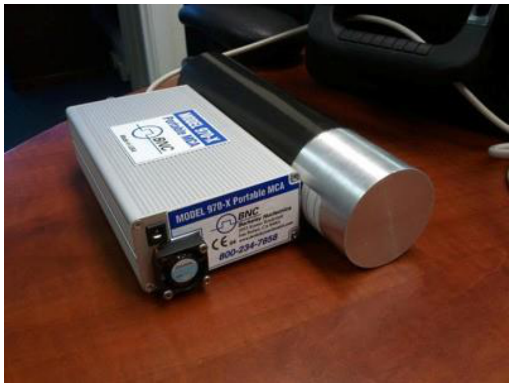
Thank you for purchasing a Model 970 Portable Multi-Channel Analyzer (MCA). A lot of time and effort was spent trying to make the Model 970 hardware, software, and this manual, as user-friendly and error-free as possible, but we cannot guarantee that no mistakes or omissions are present. All software (and manuals, for that matter) are "works-in-progress," and will be updated from time to time. These updates will be posted on our website, http://www.berkeleynucleonics.com, where the most recent versions can be downloaded. There is also a link to the Model 970 support website under the Help menu.
If you find any errors or omissions or would like additional features in the instrument, please let us know.
1.1 Model 970 System Requirements
Pentium-II computer with at least 64 MB of ram and available high-speed serial port (16550 UART or higher), running Windows® 98 or higher. (An available USB port is also acceptable if USB-to-RS232 adapter is used.) Monitor with resolution of at least 800 by 600 pixels.
This software has been tested on Windows 98, ME, NT, 2000, XP, and Windows 7.
1.1.1 Model 970 Technical Specification
- Internal 4096 channel successive approximation analog to digital converter.
- Internal positive High Voltage supply, variable from 0 to 2000 V. Negative High Voltage supply is also available.
- Model 970 accepts positive, negative, or pre-shaped (positive) pulses. Pulse heights should not exceed approximately 5 volts.
- Uses 110 VAC or 220 VAC to 12 V DC adapter (1.25 A), or runs on 6 internally recharged NiMH "AA" batteries. Rechargeable battery life is approximately 4 hours, but will vary considerably based on the power requirements of the specific detector used. Battery charging circuitry can be suppressed via a switch in the battery compartment to allow the use of standard alkaline batteries.
- ±12 V DC power for preamplifiers is available through the 7-pin mini DIN connector. This connector can also provide +5 V DC as well as logical outputs controlled by the software's alarm functions.
2Hardware Description and Controls
2.1 Front Panel
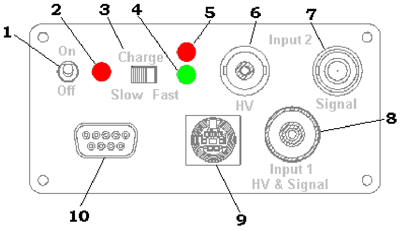
- On/Off Switch.
- Power On LED. Glows red when the Model 970 is powered on.
- Charge Mode Switch.
- Slow Charge: Internal NiMH batteries are recharged using a trickle current which will fully charge depleted batteries in about 14 hours and safely maintain them at full capacity indefinitely.
- Fast Charge: Internal NiMH batteries are undergoing a fast charge. Batteries will be fully charged in about three to four hours. Unless a fast charge is required, this switch should be left in the Slow position to maximize NiMH battery life.
- Fast Charge Indicator LED. Glows green when Fast charge is in operation. This LED turns off when the fast charge is complete, indicating that the Charge Mode switch can be set back to the Slow position.
- External Power Indicator LED. Glows red when external power is connected, regardless of whether the 970 is powered on or off.
- SHV Connector. This provides the High Voltage output only for INPUT2 (i.e., will not accept a coupled signal).
- BNC Connector. This provides the signal input only for INPUT2 (i.e., does not carry High Voltage).
- Series "C" Connector. This provides High Voltage and accepts coupled signal for INPUT1.
- Mini DIN-7 Connector. This provides ±12-volt power if needed for detector preamplifiers. Also provides +5 volts as well as logical outputs coupled to ALARM0 and ALARM1 in the Model SNAP-MCA software.
- DB9 Connector. Communication port for connecting the 970 with a controlling device (e.g., computer).
2.2 Rear Panel
- External Power Input. Accepts 12 VDC at 1.25 A. Input voltage should never exceed 15 V, as damage to the Model 970 could result.
- Fan. The fan runs anytime the 970 is connected to external power. It does not run (and is not needed) when running on batteries.
2.3 Battery Compartment
- Battery Type Selection Switch.
- Recharge position: Allows NiMH batteries to be charged.
- Standard position: The battery charging circuitry is disabled so that non-rechargeable alkaline batteries can be kept in the Model 970 while it is connected to external power.
3Powering the Model 970
3.1 AC Power Supply
A 110 VAC or 220 VAC to 12 VDC power supply is provided with the Model 970. If you need to replace this for some reason, make sure the output is regulated 12 VDC, capable of delivering at least 1.25 A continuous current. The center pin is positive. Under no circumstances allow greater than 15 VDC (or any AC voltage) into this connector, or damage to the Model 970 will likely result.
3.2 Charging the Internal NiMH Batteries
The 970 uses six "AA" 1800 mAh nickel metal hydride (NiMH) batteries. These are charged at either a slow or fast rate, determined by the position of the Charge Mode Switch. Generally speaking, it is preferable to charge these at the slow rate whenever possible. When charging for the first time, use the Slow Charge method. This will help extend the lifetime of the NiMH batteries. In the slow charge mode, completely drained batteries will be fully charged overnight, or in approximately 14 hours. In Fast Charge mode, completely drained batteries will be fully charged in three to four hours.
In order to fast charge the batteries, the Charge Mode Switch must be in the Fast position. If the position of this switch is changed to Fast while the Model 970 is connected to external power, the 970 must be switched from the Off to the On position, or the External Power connector must be unplugged from the 970, and plugged back in again in order to initiate the fast charging sequence. When fast charging, the Fast Charge Indicator LED will glow green and will turn off when the Model 970 senses that the batteries are fully charged. At the end of the fast charge sequence, the Model 970 reverts to slow charging to maintain the charge in the batteries. Make sure to change the Charge Mode Switch to the Slow position to prevent initiating a new fast charge sequence on batteries that are already fully charged.
A fast charge should never be initiated when the batteries are cold. Allow them to warm up to near-room temperature before initiating a fast charge sequence to prevent damaging the batteries.
The NiMH batteries should power the 970 for about four hours. Note however that this figure can change dramatically based on the current draw of the detector, High Voltage, other Hardware Settings, ambient temperature, and age and condition of the batteries.
The expected useful lifetime of NiMH batteries under the best of circumstances is about one year.
There is no problem with using the 970 while charging the batteries.
3.3 Using Alkaline Batteries
It is not a problem using non-rechargeable batteries in the Model 970. Remove the four screws on the Rear Panel and replace the NiMH batteries with AA alkaline batteries. However, you must be absolutely sure to switch the Battery Type Selection Switch to the Standard position to bypass the 970's internal charging circuitry. Failure to do this may result in catastrophic damage to the Model 970. Switch back to the Recharge position when NiMH batteries are reinstalled.
3.4 Alternative External Power
If the Model 970 is being operated far from an AC power source for extended periods (i.e., longer than the internal NiMH batteries can support), then it can also be powered from a number of other external sources. All that is required is that a DC voltage in the range of 12 to 15 volts is provided to the unit. If the NiMH batteries will be fast charged by this power supply, then at least 1.25 A must be available. If the NiMH batteries will be trickle charged by this power supply, then at least 750 mA must be available. If the battery charging circuitry is bypassed, then at least 600 mA must be available.
DC power from most motor vehicles can meet these specifications, and the 970 can be powered directly by a motor vehicle cigarette lighter adapter.
The center pin of the External Power Input is positive. Incorrectly applying voltage to the Model 970 will likely damage it.
4General Operation
The Model 970 hardware and SNAP-MCA software are designed to connect the 970 to a computer as painlessly as possible. The 970 must be connected to a serial port via a serial cable. The computer must be using Windows 98, Windows 98 SE, Windows ME, Windows 2000, Windows XP, or Windows 7. The COM port must utilize a 16550 (or higher) high-speed UART; this is standard on virtually all Pentium (and higher) class motherboards. Alternatively, an RS-232-to-USB adapter can be used; just make sure the adapter's drivers have been properly installed before trying to use it.
It is not strictly necessary to have the Model 970 connected to start the software. If a 970 is not found, you will be given the option of starting in Offline Mode. Should you start by doing this, there won't be much to see or do with the software other than load previously acquired spectra (a couple have been included with the installation package).
4.1 Initial Start Up
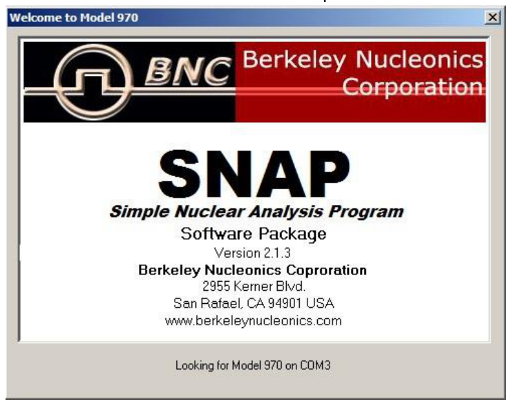
- Load the SNAP-MCA software.
- Attach the Model 970 to the computer via the serial connector.
- Connect the detector to Input 1 or Input 2.
- Plug in and power on the 970.
- Start the software. SNAP-MCA searches all COM ports for the 970 automatically.
- A detector must be entered before the 970 can be opened. Many of the 970's calibration files are tied to the specific 970/detector combination.
- Click the OK button.
- The Add New Detector window will open and contain some default "generic" data the first time it is used. If you are in a hurry to try out the 970, you can accept these values by clicking the Add button. It is recommended, that you take a few moments and fill in the information for the detector you will be using. All fields must contain information. If you click the Cancel button, SNAP-MCA will revert to the Select Detector window, which will be blank. Your only options then will be to either close the application or go back to the Add New Detector window.
- Click the Add button after you have completed entering the information for your detector.
- The Select Detector window is now displayed, showing the detector just entered. Click Use This Detector.
- A window showing the serial number of the Model 970 and the number of the COM port being used is displayed. Click Yes to enable the High Voltage to the displayed value or No to start SNAP-MCA with the High Voltage turned off. It is recommended that you enable the High Voltage at this time unless you have some reason to believe that enabling the High Voltage to the value displayed might damage the detector (e.g., the HV is higher than you think it should be or you don't actually have the detector connected yet).
- The SNAP-MCA Main Window will now be displayed. At this point, whether the first use or not, SNAP-MCA may appear to pause for a few moments while it adjusts the 970's on-board Hardware Settings and while it loads various associated files including the library file, the last used ROI Set, Energy and Efficiency Calibrations.
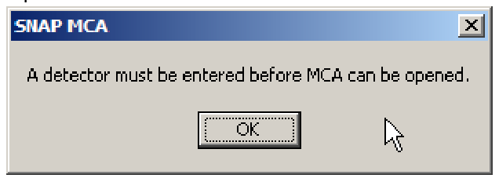
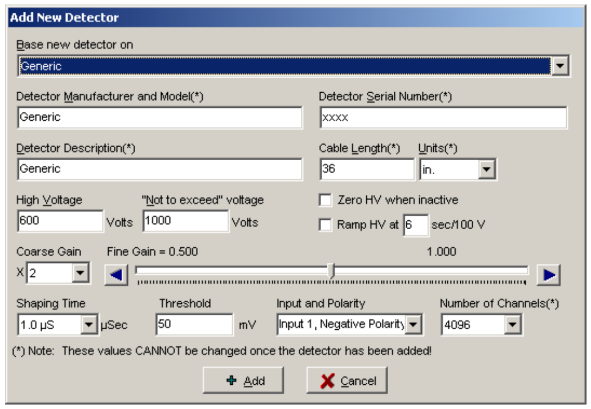
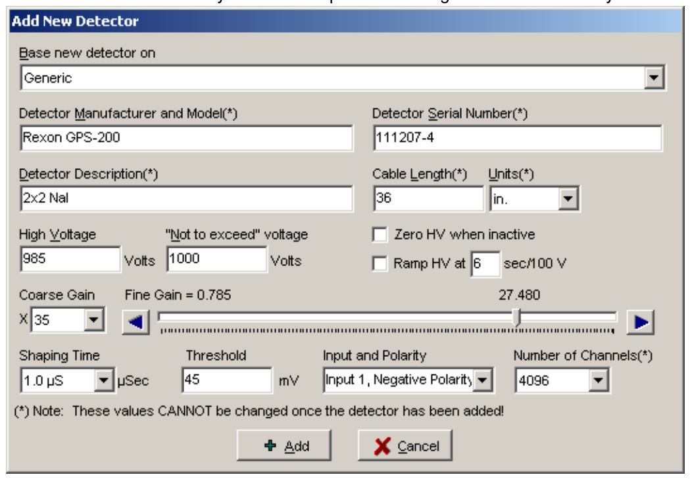
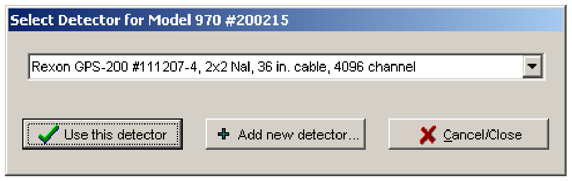
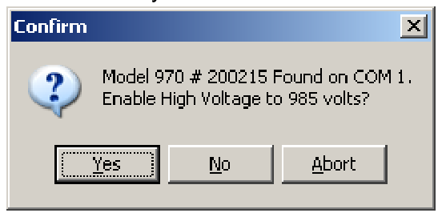
Note that field names that are marked with an asterisk cannot be changed or edited once the detector data have been added. For instance, if after capturing and storing spectra, you choose to change the Number of Channels, a new detector must be added in order to select the number of channels to be used.
The "Add New Detector" window can also be selected from the Utility | Detector… menu discussed later. In the "Base New Detector on" field, you may select an existing detector set up and make minor edits or you may start from scratch. Your system can have a number of different detectors or the same detector with a different number of channels.
Placing these parameters in the Add New Detector screen is the only way to change the number of channels in the Spectrum Display.
5Functions, Controls, and Displays
5.1 SNAP-MCA Main Window
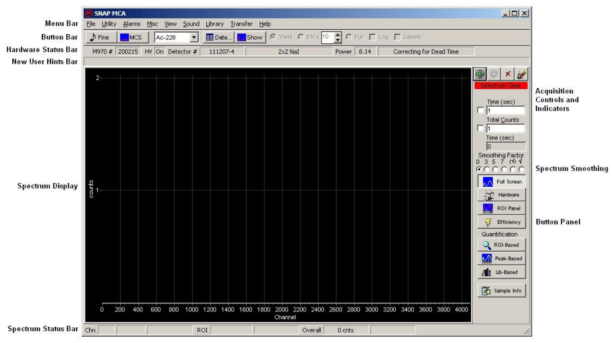
This window is the starting point for all Model 970 functions. This section describes in general terms the controls and displays on the main window. Virtually all functions can be performed using either the mouse or combinations of keystrokes.
5.2 Menu Bar
Essentially all SNAP-MCA functions can be accessed through the Menu Bar, including those triggered by buttons on the SNAP-MCA Main Window.
File Menu
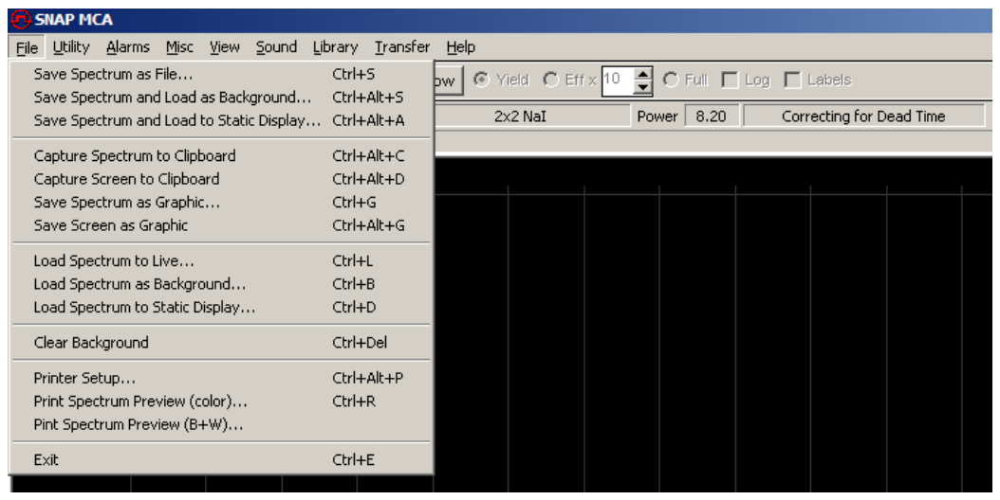
The first menu item Save Spectrum as File is for saving a displayed spectrum as a 970 spectrum file (*.usf). The next two, Save Spectrum and Load as Background and Save Spectrum and Load to Static Display, also save the spectrum but additionally load the spectrum as the Background Spectrum or to the Secondary Spectrum display.
The next two menu items, Capture Screen to Clipboard and Save Spectrum as Graphic, relate to the graphical representation of the spectrum, referred to in this document as the Chart. These allow the Chart to be copied to the Clipboard (and subsequently pasted into a word processing or graphics program) or saved as a graphics file. These relate only to the Chart exactly as displayed, and do not carry over any other portion of the window. Note: If you want to capture an image of the entire window, use Alt + Print Screen to copy a picture of the active window to the clipboard, and then paste into another application.
The next group of three menu items, Load Spectrum to Live, Load Spectrum as Background, and Load Spectrum to Static Display, concern the loading of Stored Spectra. Any previously saved spectrum captured using the same 970/detector combination can be reloaded as a "live" spectrum for re-analysis, or as the Background Spectrum, or to capture additional Acquisition time. Warning screens may be displayed if the spectrum was acquired using different Hardware Settings than are currently being used. Any spectrum in the *.usf format can be displayed in the Secondary Spectrum. Note: If a saved spectrum is loaded to "live," any spectrum currently displayed will be lost without warning unless you explicitly save it before loading the saved spectrum. Note: When a Background is loaded, it will automatically be subtracted from the visual Spectrum Display until cleared or de-selected from the View Menu. A loaded Background Spectrum will be subtracted from all subsequent analyses until the Background Spectrum is explicitly cleared, another one is loaded, or SNAP-MCA is closed.
The Clear Background menu item completely removes any loaded Background file, not just from the visual display (e.g., the Background data also will not be used in subsequent analysis of spectra).
The next three menu items relate to the printing of spectra currently displayed. Printer Setup accesses the Windows® Printer Settings dialog to alter paper type and layout, quality of the printing, etc. Print Spectrum Preview (color) allows the user to view the printer output prior to printing, adjust margins, etc. before printing the Chart. Print Spectrum Preview (B+W) does the same, but alters the displayed colors to a black spectrum on a white background in order to save printer ink. This is the recommended method of printing Charts.
The final menu item, Exit, closes SNAP-MCA. Warnings will occur if the currently displayed spectrum has not been saved, and the user must confirm that the program should close.
Utility Menu
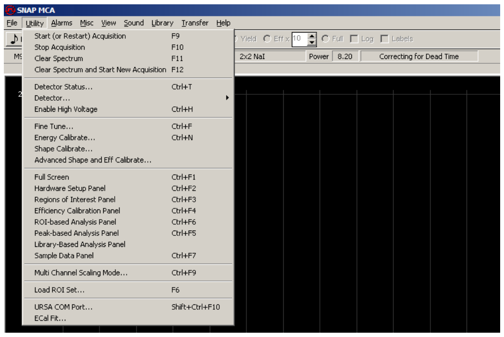
The first four menu items Start (or Restart) Acquisition, Stop Acquisition, Clear Spectrum, and Clear Spectrum and Start New Acquisition are for beginning, continuing, and stopping spectrum Acquisition as well as clearing the currently displayed Live Spectrum. These items are identical in function to the four buttons along the top of the Acquisition Controls and Indicators portion of the screen. Note: No warnings are given if the current spectrum has not been saved!
Detector Status displays a small window displaying current information about the detector being used, loaded ROI and library files, as well as the state of Energy and Efficiency Calibrations.
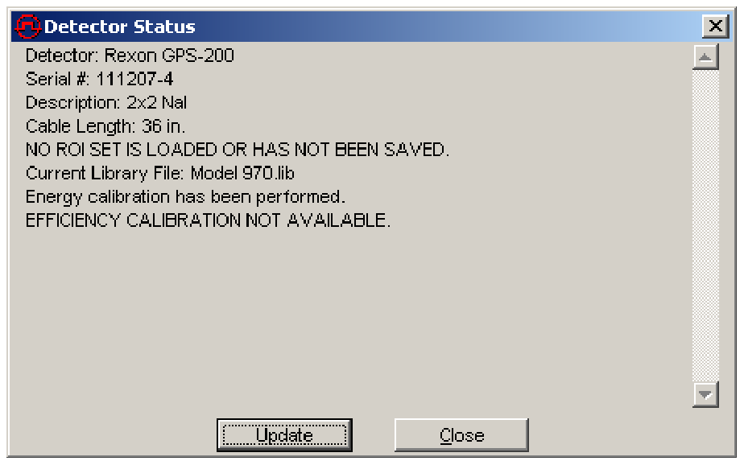
The Detector menu item opens a sub-menu containing various utilities for working with detectors:
- Add allows new detectors to be added in the same manner as during SNAP-MCA startup, without the need to shut down and re-start SNAP-MCA.
- Remove Detector allows deletion of any detector entered except the one currently in use.
- Select/Change automatically disables the 970's HV supply to allow for safe changing of detectors. A new detector is selected from the list in a manner similar to that performed during SNAP-MCA startup. Once a new detector has been selected, that detector's settings (Hardware Settings, Energy and Efficiency Calibrations, and the last-used ROI with that detector) are loaded, and the HV is enabled.
If the Disable High Voltage menu item is selected, the 970's HV will be set to zero volts and the Hardware Status Bar will display that the HV is off. This menu item will change to Enable High Voltage and, if selected, will re-set the HV to the last-used Hardware Setting.
Fine Tune opens a window to begin an automatic Fine Gain adjustment routine.
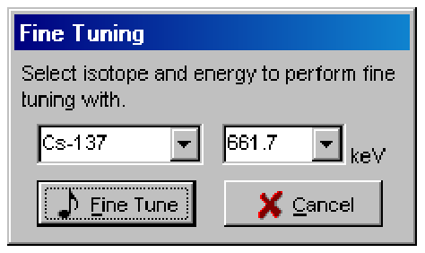
Energy Calibrate opens a window for performing an Energy Calibration.
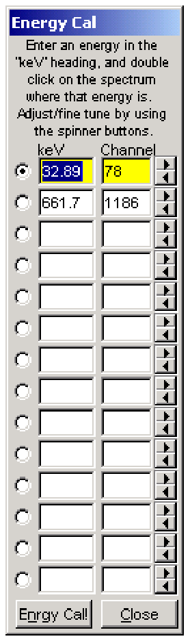
The next seven menu items (Full Screen through Sample Data Panel) are identical in function to the seven buttons in the Button Panel on the lower right of the Spectrum Display. Each of these opens a panel for a specific function along the bottom of the Spectrum Display, except for Full Screen, which closes any displayed panel and restores the Spectrum Display to the largest possible size. The functions contained in these panels are discussed in detail in the Button Panel section.
Multi Channel Scaling Mode disables and hides the SNAP-MCA Main Window, and opens a new window for performing multi-channel scaling. This function is discussed in detail in Section 7 of this Manual.
Load ROI Set is a redundant function (from the ROI-based Analysis Panel) repeated here for convenience.
970 COM Port displays which COM port the 970 is currently connected through. The 970 can be used on COM 1 through COM 16.
Alarms Menu
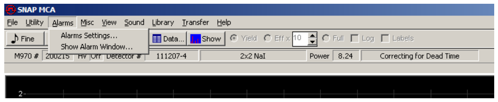
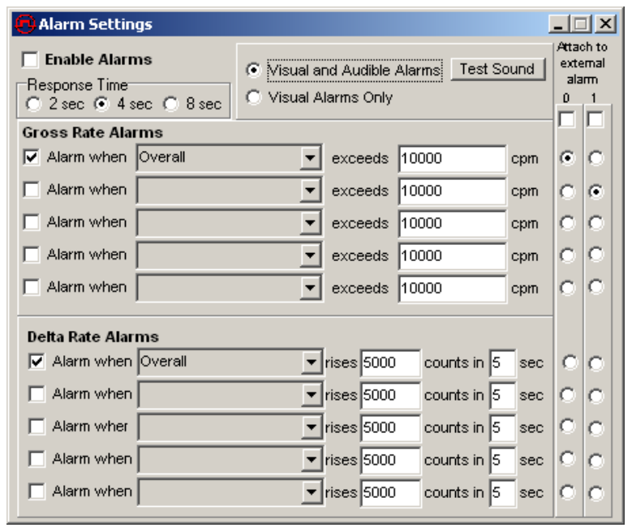
Alarm Settings opens a window where various alarms can be set. Alarms will only be active if Enable Alarms is checked. Alarms can be set for any ROI in the currently loaded ROI Set or for the overall spectrum. Alarms can be set for either a gross count rate or for an increase in gross count rate over a specified period of time. Any two alarms can also be attached to the logical alarm outputs on the Mini DIN-7 connector. The outputs go "high" (+5 V) in an alarm condition.
Show Alarm Window opens the same window that is automatically opened when any alarm condition occurs.
Misc Menu
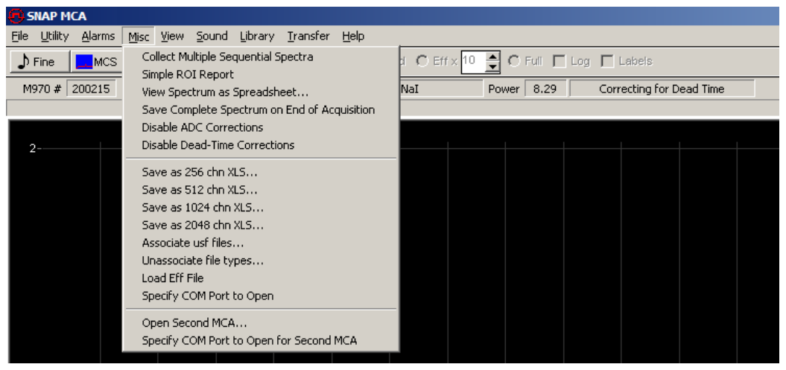
This menu item is for special functions that do not easily fit into other categories. All of these items have been suggested or requested by users.
Collect Multiple Sequential Spectra opens a window where the Model 970 can be told to collect a fixed number of spectra (or to sample continuously). At the end of each Acquisition, the spectrum file is saved with a sequential file name. Alternatively (or, additionally), a brief ROI report can be saved.
Simple ROI Report generates a minimal ROI-based report containing primarily count rate data for each ROI.
View Spectrum as Spreadsheet first prompts the user to save the spectrum as a .csv file (comma separated values), then opens the spreadsheet using your computer's default application for opening .csv files. In most cases, this application is a spreadsheet program such as Microsoft Excel.
Save Spectrum on End of Acquisition will, when checked, save the spectrum to a file each time an acquisition is ended. This occurs when an acquisition is ended by any method. The files are saved to the "Spectra" subdirectory (located within whatever directory the SNAP-MCA software is located). The filename of the spectrum will be based on the date and time in the format yyyy mm dd hh-nn-ss, where yyyy is the four digit year, mm is the two-digit month, dd is the two digit day of the month, hh is the two-digit hour in 24-hour format, nn is the two-digit minutes past the hour, and ss is the two-digit seconds past the minute.
Disable ADC Corrections will, when checked, disable the corrections made in the 970's microcontroller to compensate for the analog-to-digital converter's differential non-linearity.
View Menu
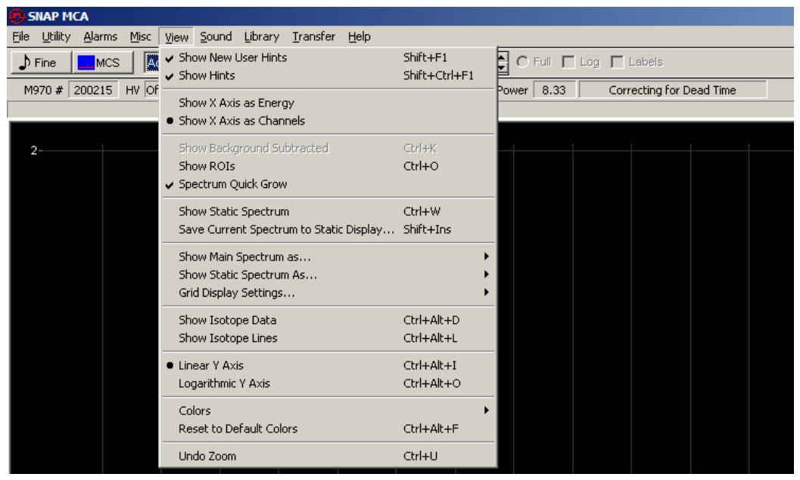
Show New User Hints enables/disables the New User Hints Bar, which displays a sentence or two briefly describing the function for any display or control the mouse cursor is currently over. Disabling (i.e., un-checking) this menu item hides the New User Hints Bar, making the Spectrum Display slightly larger.
Show Hints enables/disables displays of small pop-up windows containing a very brief description of a control or display when the cursor is over it for longer than one second.
When Show Background Subtracted is checked, the loaded Background Spectrum is visually removed from the Live Spectrum. It does not affect display of a Live Spectrum. Regardless of this visual setting, if a Background has been loaded, it is subtracted in all analysis functions. This menu item will be unavailable if no Background Spectrum has been loaded.
When Show ROIs is checked, regions of interest from the current ROI file are colored differently than the rest of the spectrum (unless color settings are altered by the user). Additionally when this is checked, the ROI section of the Spectrum Status Bar will display the ROI name and number of total counts for the ROI currently under the cursor.
If Spectrum Quick Grow is checked, the left axis of the Spectrum Display will be set to a minimal value when the spectrum is cleared. This allows the fastest visual indication of peaks forming within the spectrum.
Show Static Spectrum will show/hide the Live Spectrum if one has been loaded. Save Current Spectrum to Static Display does just that, without removing or altering the current Live Spectrum. This function does not save the Live Spectrum in any way, and no analysis can be performed on a spectrum statically displayed; it is used for visual reference or comparison only.
In the next two menu items, the Primary Spectrum and the Static Spectrum display modes can be changed between a line display (default), a bar graph, or pixels.
Grid Display Settings allows a grid to be overlaid (or not) on the Spectrum Display. Additionally, axis labels can be displayed (or not).
Show Isotope Data and Show Isotope Lines are redundant functions (from the Button Bar) repeated here for convenience.
Linear Y Axis and Logarithmic Y Axis change the display of the left axis.
The Colors menu item opens a sub-menu allowing most display colors to be altered. The Reset to Default Colors menu item restores SNAP-MCA visual settings to the "first use" state. The default colors were selected to reduce eye strain, especially on large monitors, but may not be ideal for all users or purposes (e.g., printing).
Undo Zoom gives a method for restoring the zoomed state of the spectrum to "none" without requiring the use of a mouse. The spectrum can only be zoomed by using the mouse to drag a rectangle (from upper-left to lower-right) on the Spectrum Display. Dragging any rectangle from lower-right to upper-left will un-zoom the spectrum.
Sound Menu
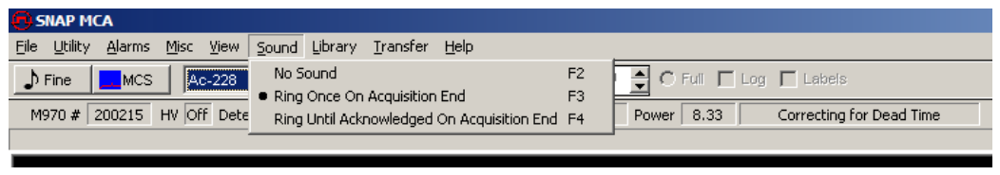
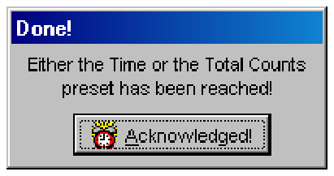
Three options exist for audible notification to the user that the acquiring of a spectrum has been completed. First is No Sound, i.e. the Acquisition just stops. In the second, Ring Once on Acquisition End, a single notification sound (the Windows "default" sound, usually a "ding") is made upon completion of an Acquisition. In the third option, the sound repeats approximately every second until the user explicitly acknowledges the fact that the Acquisition has completed by clicking the Acknowledged! button.
Library Menu
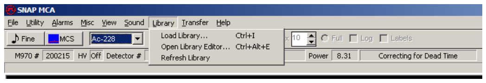
Load Library allows the user to load one of the provided photon-emitting isotope libraries, or one created by the user.
Open Library Editor opens an editor for modifying the 970 library files. Using the Library Editor is discussed in Section 6 of this manual.
Transfer Menu
These functions allow easy copying of calibration files from one computer to another or to a disk for transfer. An example would be calibrating a 970/detector combination on a desktop computer and transferring that data to a laptop for field use. Transfer of these calibration files onto another computer should be performed using the separate "SNAP-MCA Cal File Xfer" program provided, while SNAP-MCA is not running. Functionally, this is identical to copying all of the files contained in the "CalFiles" subdirectory onto a floppy disk.
Help Menu
The Help menu item opens the SNAP-MCA Help file. (Note: The Help file has not yet been distributed as of SNAP-MCA version 2.0.1.)
The 970 Support Website is a hyperlink to (you guessed it!) the 970 Support Website.
The About function opens a window containing information about SNAP-MCA software and the Model 970 hardware. Version Information simply displays the version number of the SNAP-MCA software.
5.3 Button Bar
The left two buttons (Fine and MCS) on this portion of the SNAP-MCA Main Window provide quick access to the Energy Calibration window and the Multi Channel Scaling mode. These functions are discussed in Section 8.4 and Section 7, respectively, in this manual.
The dropdown menu contains a list of all isotopes in the currently loaded library that are enabled. Selecting one of these isotopes allows data to be displayed as a table and/or as lines on the Spectrum Display.
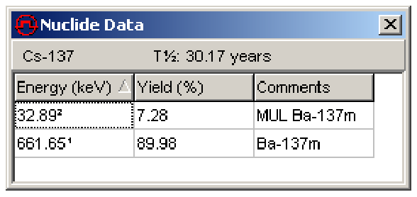
Clicking the Data button opens a window that shows the name and half life of the isotope, as well as the specific data for all specific energies that are enabled in the library file. This window can be resized by moving the mouse cursor on an edge until the cursor becomes a double-headed arrow and dragging until the desired size is achieved. The window can be moved to any convenient location by clicking the blue bar and dragging. When this window is displayed, the button caption becomes Hide, and clicking on it (or on the "x" in the upper right corner) will close the window. The order of the display can be based on energy or yield, ascending or descending. Change this by clicking on the top of the relevant column. Note: The information in this display can be altered by using the Library Editor, detailed in Section 6 of this manual.
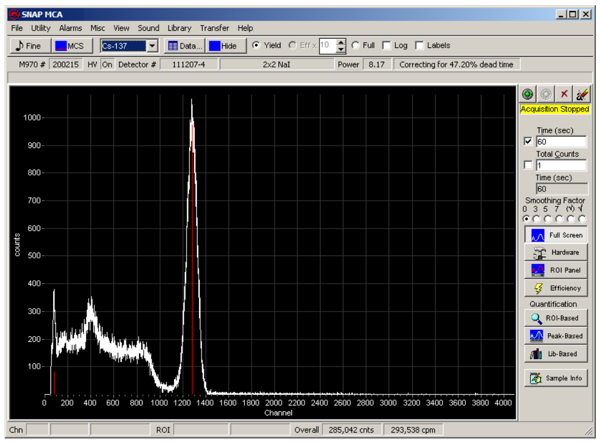
The Show button will only be enabled if an Energy Calibration has been performed. Clicking the Show button displays marker lines at the energies where enabled library peaks for the current isotope should reside. When the marker lines are displayed, the button caption becomes Hide. If Yield is also selected, the heights of these lines are proportional to the yield for each energy. If an Efficiency Calibration has been performed, Eff x may be selected. This displays the line heights proportional to the yield for each energy times the efficiency at that energy times the value in the box to the immediate right. Selecting Full displays each energy line at the full height of the spectrum, regardless of yield. Checking Log scales the heights of the energy lines against a logarithmic axis. Checking Labels displays a small box over each energy line displaying the energy of that line in keV.
5.4 Hardware Status Bar
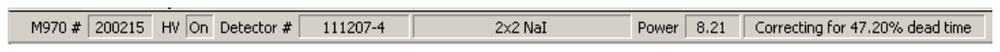
This section along the top of the Spectrum Display shows information about the hardware currently being used by SNAP-MCA. This includes the serial number of the Model 970, the status of the High Voltage supply (currently on or off), and the serial number and description of the current detector.
The Power section displays the voltage being supplied to the 970 power supply. This value is updated during SNAP-MCA startup, and about every minute or two during an Acquisition. If the voltage drops below 6 V a warning will be displayed, and at 5.5 V a message will be shown that the battery condition is now critical and batteries should be replaced immediately.
5.5 New User Hints Bar
If Show New User Hints has been enabled in the View menu on the Menu Bar, a sentence or two appears here that briefly describes the function for any display or control the mouse cursor is currently over.
5.6 Spectrum Display
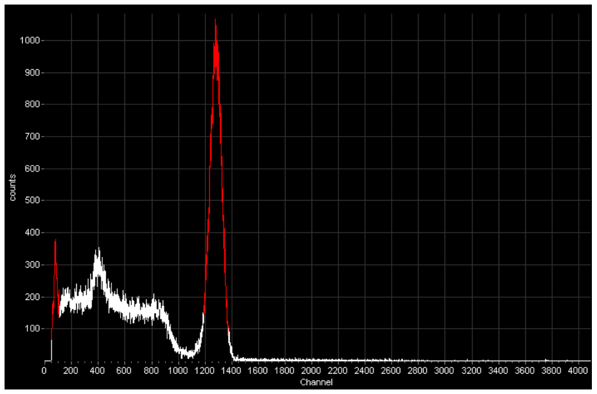
This area graphically displays the spectrum data collected. This area can be zoomed by using and clicking the mouse and "dragging a box" around the area of interest, from upper-left to lower-right. This will not work if the starting or ending points of the box are outside the Spectrum Display area. Once a spectrum is zoomed, it can be panned by right-clicking the mouse within the Spectrum Display and dragging it. Un-zoom by dragging a box (any size) anywhere on the Spectrum Display from lower-right towards the upper-left.
5.7 Spectrum Status Bar
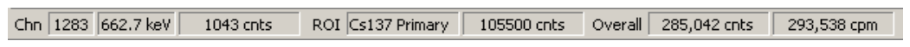
This section along the bottom of the SNAP-MCA Main Window displays information about the displayed spectrum, whether currently acquiring or not, and whether or not the spectrum has been loaded to a file. This display reflects no information about any secondary spectrum that is displayed.
The first group of three boxes (towards the left) reflect data for the individual channel over which the mouse cursor is located. These are the channel number, the energy associated with that channel (only if an Energy Calibration has been performed), and the number of counts in that particular channel. If a Background Spectrum has been loaded, the count displayed will reflect the Background-subtracted counts if Show Background Subtracted has been selected under the View menu on the Menu Bar.
The second group of two boxes (in the center) shows data for whatever ROI the cursor is over, if an ROI Set is loaded and Show ROIs is checked under the View menu. If no ROI Set is loaded, Show ROIs is not checked, or the cursor is not over an ROI, these boxes will be blank. The first of these two, displays the name given to the ROI, and the second shows the total (integrated) number of counts in that ROI. If a Background Spectrum has been loaded, the count displayed will reflect the Background-subtracted counts if Show Background Subtracted has been selected under the View menu on the Menu Bar.
The final two boxes (towards the right) display overall data for the spectrum. The first of these two boxes, displays the total number of counts for the spectrum, and the second box displays an approximation of the overall count rate based on an average of the last 20 seconds of spectrum data. The overall count data will not reflect Background subtraction. The overall count rate box may display misleading data for approximately the first 20 seconds following the start of an Acquisition.
5.8 Acquisition Controls and Indicators
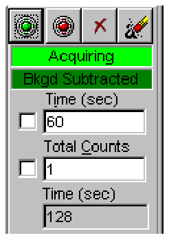
The four buttons along the top of this section control the Acquisition of spectra. From left to right, these are Start, Stop, Clear, and Clear and Restart.
The Start button begins an Acquisition. If a spectrum is currently displayed but is not currently accumulating, the Acquisition will re-start, adding data to the existing spectrum. If a spectrum is currently accumulating, this button will have no effect.
The Stop button ceases spectrum Acquisition. No data is destroyed, and the Acquisition can be restarted if desired. This button has no effect if the Acquisition has previously been stopped.
The Clear button erases all data from the spectrum, and resets the elapsed time to zero. If a spectrum is currently acquiring, Acquisition will stop. No warning is given before data is deleted.
The Clear and Restart button is equivalent to pressing the Clear button followed by the Start button, and is provided for convenience. Again, no warning is given before data is deleted.
Immediately below these buttons are two status displays. The top one of these will always be visible, and gives some information about the status of the Model 970. The text of this display may be:
| Status | Meaning |
|---|---|
| Spectrum Clear (red background) | Indicates that the Spectrum Display contains no data, and the 970 is not acquiring data. |
| Acquiring (light green background) | Indicates that a spectrum is currently accumulating. |
| Acquisition Stopped (yellow background) | Indicates that the 970 is not currently acquiring data, but the Spectrum Display contains data. |
| Spectrum Loaded (yellow background) | Indicates that the 970 is not currently acquiring data, but the Spectrum Display contains data that has been loaded to Live from a file. |
The second (and lower) of these displays gives information about the Background Spectrum, and will only be visible if a Background Spectrum has been loaded. The text of this display may be:
| Background Status | Meaning |
|---|---|
| Bkgd Subtracted (green background) | Indicates that a Background Spectrum has been loaded and is currently being subtracted from the visual Spectrum Display. It will also be subtracted from any spectral analysis performed, including peak searches. |
| Bkgd Loaded (green background) | Indicates that a Background Spectrum has been loaded but is not being subtracted from the visual Spectrum Display. The Background Spectrum will still be subtracted from any spectral analysis performed. |
Moving downward, the next object is the white Time (sec) input box, with a checkbox immediately to its left. If the checkbox is checked, the 970 will stop acquiring a spectrum when the total counting time equals this value. Time units are in seconds. An Acquisition cannot be started or continued if the checkbox is checked and the Acquisition time equals or exceeds the amount of time in the input box. Typing in the Time (sec) box will immediately un-check it; pressing Enter on the keyboard after changing the Time (sec) value will re-check it.
Directly underneath the Time (sec) input box is the white Total Counts input box, with a checkbox immediately to its left. If the checkbox is checked, the 970 will stop acquiring a spectrum when the total number of accumulated counts equals this value. An Acquisition cannot be started or continued if the checkbox is checked and the total accumulated overall counts equals or exceeds the number of counts in the input box. Typing in the Total Counts box will immediately un-check it; pressing Enter on the keyboard after changing the Total Counts value will re-check it.
The final item in this area is the gray Time (sec) box. This displays the total counting time, in seconds, for the spectrum currently displayed. If a spectrum has been loaded to Live from a file, this display will reflect the amount of time for which that spectrum was counted.
5.9 Spectrum Smoothing
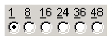
The photomultiplier tubes used in NaI (Tl) gamma detectors (as well as many others) do not supply a smooth continuum of energies. This fact is not apparent when the spectrum is displayed in 256 or 512 channels. SNAP-MCA's 4096 channels of data can be filtered to give a smoother representation of the energy continuum.
Try using different values of smoothing to get the "best looking" Spectrum Display. Smoothing is applied only to the visual display and has no affect whatsoever in performing peak searches and analysis.
5.10 Button Panel
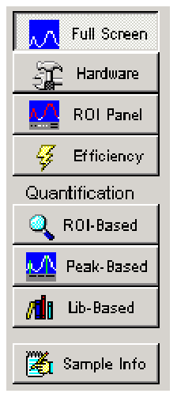
The Button Panel provides access to the primary "workhorse" functions of SNAP-MCA. Each of these is described fully below.
Full Screen
This hides all panels and makes the Spectrum Display as large as possible within the confines of the window borders.
Hardware
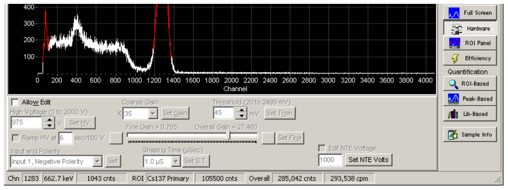
This displays the Hardware Panel for adjusting the 970 hardware controls. To adjust other Hardware Settings, the Allow Edit checkbox must be checked.
High Voltage can be adjusted by either directly entering a number in the High Voltage input box or by using the up/down buttons immediately to its right. When entering the value directly, you can use any value between 0 and 2000 V, including decimal values. When using the up/down buttons, HV is increased/decreased in 1 V increments. After changing the displayed HV value, the Set HV button will become enabled. Pressing this button will apply the setting to the 970. If an Acquisition is currently underway, it will automatically pause while the new setting is applied, then resume using the new setting.
If Ramp HV is not checked, the High Voltage will change as instantaneously as possible. This is usually fine for most detectors. If needed, Ramp HV can be checked and the detector supply voltage will always be changed at the rate displayed. This can range from 6 to 219 seconds per 100 volts.
The detector Input and Polarity can be selected from the dropdown menu. INPUT1 is the series "C" connector where signal and detector supply voltage are carried on the same line. INPUT2 is the pair of separate connectors for signal and detector supply voltage, BNC and SHV respectively. If "Shaped Input, Positive Polarity" is selected, either of the inputs can be used. Note: If a shaped input is used, Coarse and Fine Gain controls will have no effect on the spectrum input. Also, take care to ensure that shaped pulses are kept in the 0 to 5 V range; an attenuator may be required.
Coarse Gain is adjusted using the Coarse Gain dropdown menu. The Gain ranges are x2, x4, x15, x35, x125, and x250. Coarse Gain times Fine Gain equals Overall Gain. After changing the Coarse Gain value, the Set Gain button will become enabled. Pressing this button will apply the setting to the Model 970. If an Acquisition is currently underway, it will automatically pause while the new setting is applied then resume using the new setting.
Fine Gain can be adjusted either by clicking on the slider bar or by clicking the arrow keys to the right and left of the control. The Fine Gain can be adjusted in 255 steps from (approximately) x0.004 to (approximately) x1, and the approximate Gain value is displayed immediately above and to the left. Overall Gain (Coarse Gain times Fine Gain) is displayed immediately above and to the right. After changing the Fine Gain value, the Set Fine button will become enabled. Pressing this button will apply the setting to the Model 970. If an Acquisition is currently underway, it will automatically pause while the new setting is applied then resume using the new setting.
Use the Fine Gain control to perform small "nudges" to compensate for spectrum drift caused by temperature changes in the detector. If an even smaller shift in Gain is needed, try adjusting the High Voltage by tiny increments (including decimal values).
Threshold can be adjusted by either directly entering a number in the Threshold input box or by using the up/down buttons immediately to its right. When entering the value directly, you can use any whole number between 0 and 2498 mV. When using the up/down buttons, Threshold is increased/decreased in 1 mV increments. After changing the displayed Threshold value, the Set Thsh button will become enabled. Pressing this button will apply the setting to the Model 970. If an Acquisition is currently underway, it will automatically pause while the new setting is applied then resume using the new setting. Note: High values of Gain will likely necessitate increasing the Threshold.
Shaping Time can be adjusted using the dropdown menu. Possible values are 0.25, 0.5, 1, 2, 4, 6, 8, and 10 µseconds. For the vast majority of cases, a shaping of 1 µsec is appropriate. After changing the Shaping Time value, the Set S.T. button will become enabled. Pressing this button will apply the setting to the Model 970. If an Acquisition is currently underway, it will automatically pause while the new setting is applied then resume using the new setting.
ROI Panel
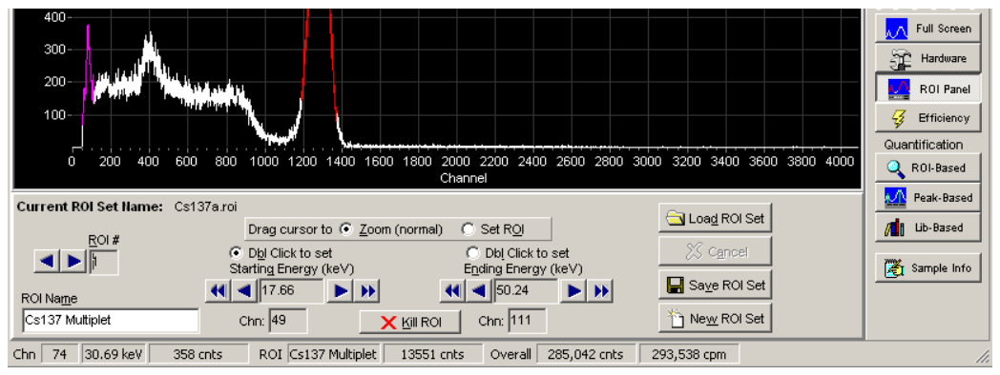
This displays the ROI Panel, for creating or adjusting ROIs (Regions of Interest). You will not be able to open this panel until an Energy Calibration has been performed.
Current ROI Set Name: displays the filename of the currently loaded ROI Set. If no file is displayed, then no ROI Set is currently loaded. Note: A small display will appear below Current ROI Set Name: that flags the fact that the current ROI Set has been altered but not yet been saved.
The small panel (Drag cursor to) immediately below this normally has Zoom (normal) checked. This means that clicking and dragging on the spectrum will have the normal effect of zooming and un-zooming the display. If Set ROI is checked instead, clicking and dragging in the spectrum will define an ROI. After setting an ROI this way, the panel will revert to Zoom (normal).
Moving down and to the left is a small gray box displaying the current ROI # with "left" and "right" arrow buttons. This box displays which specific ROI is being edited within the greater ROI Set. Click the arrow buttons to change the specific ROI. The currently selected ROI is shown in fuchsia on the Spectrum Display. To create a new specific ROI, advance the ROI # to an ROI that does not yet contain data. Up to 50 ROIs may be defined within an ROI Set.
Immediately below the ROI # is the ROI Name input box. Use this section to provide a descriptive name for each individual ROI within the greater ROI Set. This name becomes the one displayed in the Spectrum Status Bar, and is also used to identify individual ROIs in any analysis reports.
Approximately in the middle of the ROI Panel are two radio button controls, Dbl Click to Set Starting Energy (keV) and Dbl Click to Set Ending Energy (keV). When the ROI Panel is visible, double clicking on the spectrum will set either the lower or upper bound of an ROI (depending on which of these controls is selected).
The controls immediately below provide a display of the lower and upper bounds of a specific ROI. Using the buttons with the single arrow will advance the boundary of the specific ROI up or down by one channel; the buttons with the double arrow will advance the boundary up or down by 10 channels. The energy associated with this channel will be updated in the input box.
The Kill ROI button will completely delete the currently selected specific ROI, without giving any additional warning.
Load ROI Set opens a dialog box to select an ROI Set. If the current ROI Set has not been saved since it was last altered, a warning will be displayed and you will be given an opportunity to save the current ROI Set before continuing. If the ROI Set is not explicitly saved, all changes will be lost when a new ROI Set is loaded.
The Cancel button will only be enabled when the current ROI Set has been altered or edited in any way since when it was last saved. Using this function will re-load the current ROI Set as it was last saved.
The New ROI Set button clears the current ROI Set from SNAP-MCA (if it has not been saved, you will be given the opportunity to do this first) so that a new ROI Set can be created. You will be prompted to first name the ROI Set, which you must do in order to continue.
Efficiency
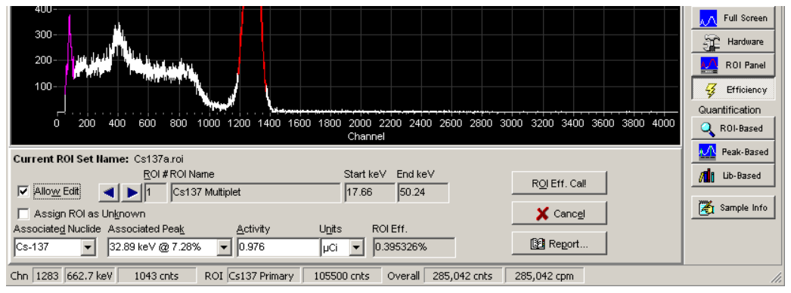
This displays the Efficiency Calibration Panel. This Efficiency Calibration is based on an ROI Set, but the same calibration is also used when performing peak-based or library-based spectrum analyses. An ROI Set, therefore, must be created and/or loaded before this panel is available. Efficiency Calibrations are unique to specific 970/ROI file/Detector combinations.
Current ROI Set Name: displays the filename of the currently loaded ROI Set. It is not recommended that an Efficiency Calibration be performed using an unsaved ROI Set.
If the Allow Edit box is checked, the controls on this panel will be unlocked for editing. If this box is not checked, the data for the last calibration can be viewed, but not altered.
The arrow buttons will change the currently selected specific ROI within the greater ROI Set and the data on this panel will reflect only that specific ROI, as will any modifications. The currently selected ROI will be displayed in fuchsia. The gray boxes display specific ROI data, including the Efficiency (as a percentage of counts detected per disintegration), if a calibration has been previously performed.
The Assign ROI as Unknown checkbox allows a specific ROI within an ROI Set to be designated as one that is not contained in the Efficiency Calibration source being used.
The Associated Nuclide control contains a dropdown list of all enabled nuclides in the current library. Prior to performing an Efficiency Calibration, a nuclide must be assigned to each specific ROI within the ROI Set by clicking on one of the items in the list. If the needed nuclide is not in this list, the library must be edited to enable this nuclide.
The Associated Peak control contains a dropdown list of all enabled peaks (for the nuclide selected as the associated nuclide) in the current library. Prior to performing an Efficiency Calibration, one of these peaks must be assigned to each specific ROI within the ROI Set by clicking on one of the items in the list. If a needed peak or multiplet is not on the list, the library must be edited to enable or add this peak or multiplet.
Enter the activity of the specific isotope in the Activity input box. This must be performed for all ROIs within the ROI Set prior to performing an Efficiency Calibration. Use the Units dropdown list to assign units to the activity. Note: The activity units must be the same for all activities entered. Changing the units for one specific ROI will change the units assigned to all other ROIs within the ROI Set.
The ROI Eff. Cal! button performs an Efficiency Calibration by applying the data entered on the Efficiency Calibration Panel against the currently displayed spectrum. If no data is contained in the spectrum, or if all the fields are not filled in, errors will be generated and the Efficiency Calibration will be aborted.
The Cancel button will make any alterations made on the Efficiency Calibration Panel revert back to the ones used in the most recent Efficiency Calibration.
Every time an Efficiency Calibration is performed, a report is generated and stored in the 970 Cal Files directory. This report can be viewed, printed, or saved by clicking the Report… button.
Peak-Based
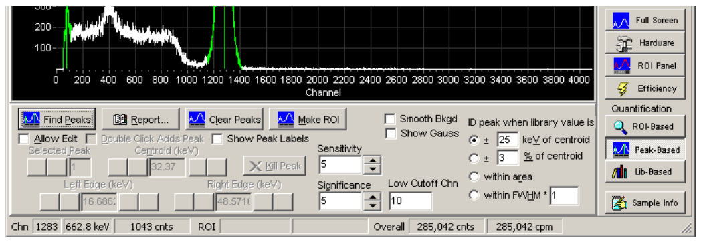
This displays the Peak-Based Panel for performing peak searches, and for performing isotopic identification and peak-based Quantitative Analysis.
Clicking the Find Peaks button causes SNAP-MCA to search the currently displayed spectrum for identifiable peaks. These will be displayed on the spectrum in green, with a line indicating the peak centroid. The collection of found peaks acts a bit like a temporary ROI Set, and the currently selected peak (which will be the leftmost one immediately following a peak search) will be displayed in fuchsia.
Clicking the Report… button makes SNAP-MCA perform a Qualitative Analysis. If an Efficiency Calibration has been performed, a Quantitative Analysis will also be performed. This will then be displayed on a "report" screen, where it can be viewed, printed, or saved.
The Clear Peaks button will erase all found peaks. The Make ROI button allows the user to take a group of found peaks and convert them to an ROI Set.
The Peak Search Sensitivity control affects how "distinct" a peak needs to be before it is flagged as "found." If it appears that too many peaks have been identified in a peak search, try lowering the value of Peak Search Sensitivity. Conversely, if too few peaks have been identified, raise the value of Peak Search Sensitivity.
Placing a dot associated with one of the four radio buttons will determine which method is used in identifying the nuclide associated with a peak. The top item will associate a peak with a nuclide if the library energy is within the stated energy range of the peak's centroid. The next item, if selected, will associate a peak with a nuclide if the library energy is within the stated percentage of the library energy. The third item, if selected, will associate a peak with a nuclide if the library energy is anywhere within the area of the found peak. The fourth item, if selected, will associate a peak with a nuclide if the library energy is anywhere within the FWHM (full width at half maximum) calculated for the found peak.
There has been no computer program ever written that surpasses an experienced human eye at discriminating whether a given portion of a spectrum represents a peak or not. Therefore, SNAP-MCA allows the user wide latitude in editing (or ignoring) the results of the computerized peak search.
If the Allow Edit box is selected, the controls for editing the found peaks are enabled. When Double Click Adds Peak is selected, double clicking on a portion of the spectrum will add a "found peak." This new peak is treated the same as the others found by the computerized search, and this method of adding "found peaks" may be used instead of, or as a supplement to, the computerized search.
The arrow buttons below Selected Peak change the currently selected found peak, which is indicated by the displayed number, and highlighted in fuchsia in the Spectrum Display. Data that is displayed and edits that are made will apply only to the currently selected found peak. Values of Left Edge, and Right Edge for the Centroid, can be altered by using the single and double arrow buttons. The single arrow buttons will move the relevant value up or down the spectrum by one channel, and the double arrow buttons will move the relevant value up or down the spectrum by 10 channels. The current value will be displayed (in keV) in the associated gray box.
Finally, the Kill Peak button will permanently delete the currently selected found peak (whether found by the computer search or manually assigned).
ROI-Based
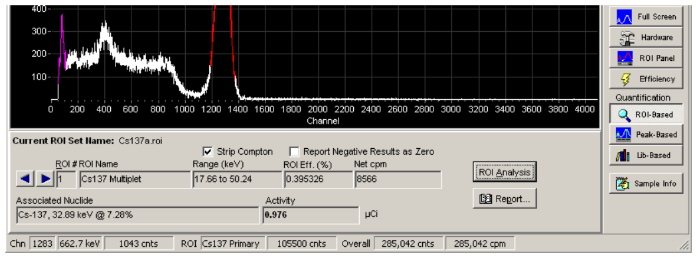
This displays the ROI-Based Quantitative Analysis Panel.
Clicking the ROI Analysis button performs an ROI-by-ROI analysis of the currently displayed spectrum, and calculates the activities for each ROI. A summary of this data is displayed for each ROI. Change the currently selected ROI (indicated by fuchsia on the Spectrum Display) by clicking the arrow buttons.
Clicking the Report… button displays the detailed results of the ROI-based Quantitative Analysis. From the "report" screen, this data can be viewed, printed, or saved.
Sample Info
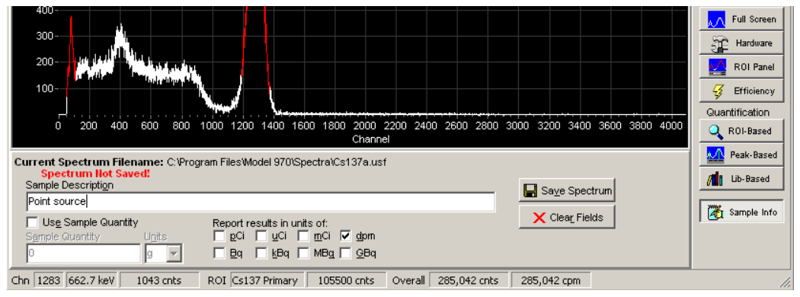
This displays the Sample Data Panel for entering sample descriptions and quantities.
The Sample Description input box allows the entry of a brief description or note. This will be displayed in all subsequent analyses and generated reports, and saved with the spectrum file.
If Use Sample Quantity is checked, two controls will be enabled that allow entry of a sample quantity and the associated units. These values will be saved with the spectrum, and used and displayed in subsequent analyses.
Eight checkboxes with radiological units are displayed. Any combination of these may be checked, and activity results in subsequent reports generated will be displayed in all of the units selected. If none of these are checked, no Quantitative Analysis results will be displayed in subsequently displayed reports.
The Save Spectrum button performs the same function as if selected under the File Menu. It is also included here for convenience. The Clear Fields button deletes the data entered in the Sample Description and Sample Quantity.
The "Print Preview" or "Report" Screen
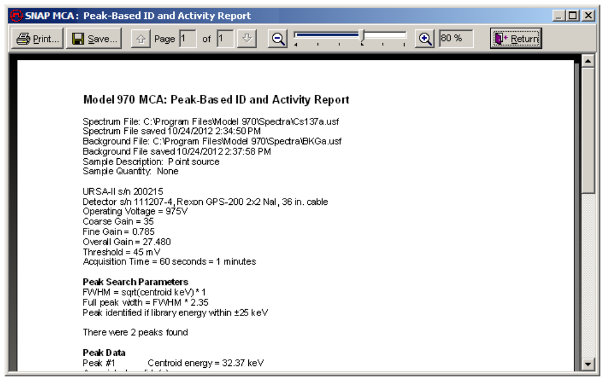
This screen is used to display, save, and print all reports generated by SNAP-MCA.
The Print button will send the report to any printer via the Windows operating system. The report should print exactly as displayed.
The Save button allows the report to be saved as either a rich text file (rtf) or a plain text file (txt). Both formats can be used with most word processors; saving as an .rtf keeps the look of the file exactly as it is displayed (i.e., changes in font sizes, bold, tabs).
The up and down arrows are the same as page up and page down keys, which can also be used. The "-" and "+" magnifying glasses, along with the slider, allow the size or zoom of the report display to be changed. The Return button closes the report window.
6Using the Library Editor
Two libraries are distributed with SNAP-MCA and SNAP-MCA Full. As a general rule, SNAP-MCA is intended for NaI (Tl) detectors, and SNAP-MCA Full is intended for detectors with higher resolution. Both were created from the same information, contained in "Radioactive Decay Data Tables" by David C. Kocher, Report DOE/TIC-11026. The data was originally formatted for computer by Grove Engineering from information provided by RSIC. SNAP-MCA Full contains all information, while SNAP-MCA has had photons with lower energies and yields that are unlikely to be seen by NaI (Tl) detectors removed to improve performance. Both libraries contain many calculated multiplets as an aid. These can, of course, be edited or disabled.
Either library can be edited and saved under a different name, in order to create a new library file. Isotopes and specific photon energies can be added, edited, or deleted.
The Library Editor can be opened by selecting Open Library Editor… under the Library Menu from the SNAP-MCA Main Window.
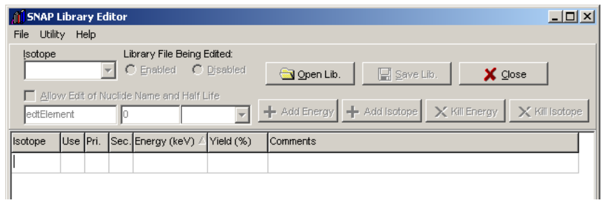
When the Library Editor is opened, there is no Library file initially loaded for editing. Click on the Open Lib. button and select a library file for editing.
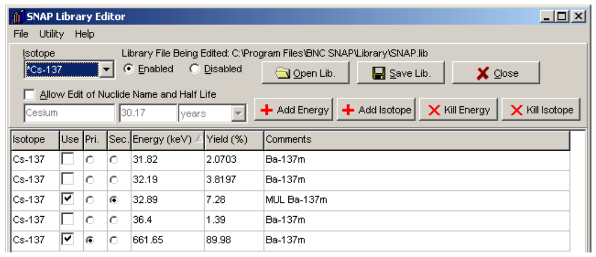
Once a library has been opened, select an individual isotope from the drop down list. All isotopes in the Library are displayed in the list, and those that are currently enabled are shown with an asterisk. After an isotope is selected, the screen will update to display that isotope's information. Use the Enabled or Disabled radio buttons to determine whether the particular isotope will be used in the Library. Only enabled isotopes will be available in SNAP-MCA.
Use the Save Lib. button to save the library as it exists, reflecting any changes that have been made. This can also be used to save the Library under a different name.
The Cancel button can be used to close the Library Editor without saving any changes that have been made since the previous save. If no changes have been made since the previous save, the button will read Close.
Check Allow Edit of Nuclide Name and Half Life to allow editing of those values, if needed.
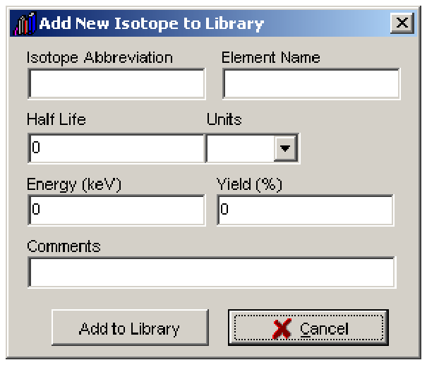
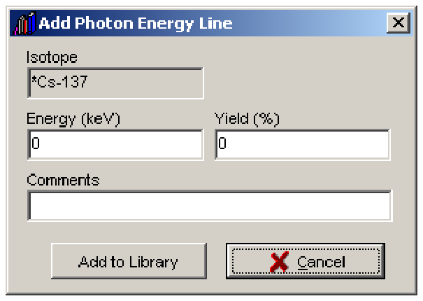
Use the Add Energy button to add a Photon Energy to the currently displayed isotope. Click on any Photon Energy in the grid and use the Kill Energy button to completely delete that Photon Energy from the currently displayed isotope. Use the Add Isotope button to add a new isotope to the current Library. At least one Photon Energy must be added in order to add the isotope. Click on the Kill Isotope to completely delete the entire isotope currently displayed from the Library.
The grid contains a display of each Photon Energy for the currently selected isotope, and each Photon Energy can be edited here also. The fields are as follows:
| Field | Description |
|---|---|
| Isotope | Display of the isotope abbreviation. This should be the same for each displayed photon. |
| Use | Checkboxes that indicate whether that particular photon or energy will be used (assuming the isotope itself is also enabled). |
| Pri. | This column of radio buttons is used to indicate which energy is designated as the "primary peak" for the isotope. The primary peak MUST be present in a spectrum (in addition to the secondary peak) in order to positively identify the isotope and activity will be calculated based in the primary peak. Therefore, the energy with the highest yield is usually designated as the primary peak. It is acceptable to designate the same energy as both the primary and secondary peaks, but the energy must be enabled. |
| Sec. | This column of radio buttons is used to indicate which energy is designated as the "secondary peak" for the isotope. The secondary peak MUST be present in a spectrum (in addition to the primary peak) in order to positively identify the isotope. It is acceptable to designate the same energy as both the primary and secondary peaks, but the energy must be enabled. |
| Energy (keV) | This column displays each specific energy, in keV, of the currently selected isotope. |
| Yield (%) | This column displays the specific yield (or abundance) of each specific energy, expressed as a percent (photons per 100 disintegrations at that energy). |
| Comment | This column provides a section for users to enter a comment or note regarding the particular energy. For example, all multiplets contain "MUL" in the comment field. |
Once a Library has been edited and saved, it must be specifically loaded into SNAP-MCA (using Load Library… under the Library Menu) for the changes to be seen.
7Using MCS Mode
The Multi Channel Scaling mode is used for the application of watching or recording changes in count rate over time. An analog meter-style display also shows the current count rate. MCS mode allows you complete control over how the data is accumulated and displayed.
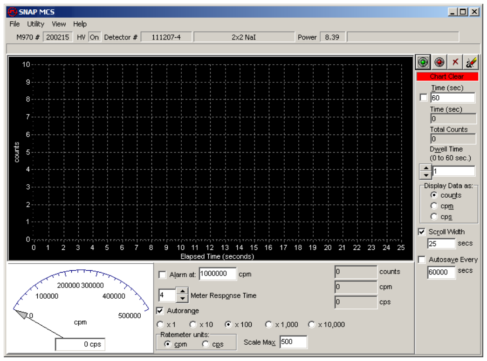
7.1 Menu Bar
File Menu
The first menu item, Save Chart as csv… saves all the data collected in the current Acquisition to a comma separated value (csv) file. Csv files can be opened by most spreadsheet and word processing programs.
The next two menu items (Capture Chart to Clipboard and Save Chart as Graphic…) relate to the graphical representation of the display. These allow the Chart to be copied to the Clipboard (and subsequently pasted into a word processing or graphics program), or saved as a graphics file. These relate only to the Chart exactly as displayed, and do not carry over to any other portion of the window. Note: If you want to capture an image of the entire window, use Alt+PrintScreen to copy a picture of the active window to the clipboard, then paste into another application.
The next two menu items relate to the printing of the Chart currently displayed. Printer Setup… accesses the Windows printer settings dialog to alter paper type and layout, quality of the printing, etc. Print Chart as Graphic allows the user to view the printer output, adjust margins, etc. and print the Chart.
Exit closes the 970 MCS window and returns to the SNAP-MCA main screen.
Utility Menu
The first four menu items Start (or Restart) Acquisition, Stop Acquisition, Clear Spectrum, and Clear Spectrum and Start New Acquisition are self-explanatory, and their functions are identical to the four buttons near the upper right of the Chart display.
View Menu
Show New User Hints enables/disables the New User Hints Bar, which displays a sentence or two briefly describing the function for any display or control the mouse cursor is currently over. Disabling (i.e., un-checking) this menu item hides the New User Hints Bar, making the Spectrum Display slightly larger.
Show Hints enables/disables displays of small pop-up windows containing very brief description of a control or display when the cursor is over it for longer than one second.
The Show Trace as… menu item opens a sub-menu allowing the Chart trace to be displayed as a line, as points, as a line with points (the default), bars, or as an area graph.
The next three menu items (Chart Background Color…, Chart Trace Color… and Chart Labels Color…) allow the referenced display colors to be altered. The Reset to Default Colors menu item restores the 970 MCS visual settings to the "first use" state. The default colors were selected to reduce eyestrain, especially on large monitors, but may not be ideal for all users or purposes (e.g., printing). Use common sense in applying different colors. For example, if the Chart Background Color is set to be the same as the Chart Trace Color, the display will appear blank.
Help Menu
The Help menu item opens the SNAP-MCA Help file. (Note: The Help file has not yet been distributed as of SNAP-MCA version 2.0.2.)
The About… function opens a window containing information about SNAP-MCA and the 970 hardware. Version Information… simply displays the version number of SNAP-MCA software.
7.2 MCS Acquisition Controls and Indicators
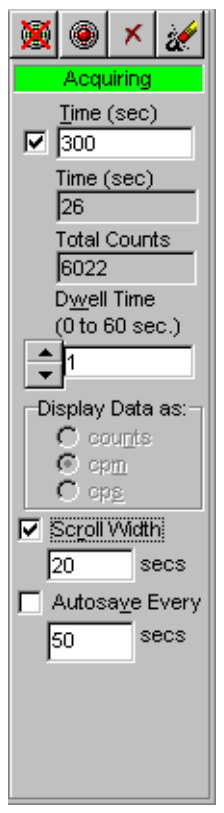
The four buttons along the top of this section control the acquiring of spectra. From left to right, these are Start, Stop, Clear, and Clear and Restart. The functions of these buttons are mostly self-evident and they are identical to the functions described in Section 5.8.
Immediately below the four buttons is a status display showing the current status of data acquisition.
Moving downward, the next object is the white Time (sec) input box, with a checkbox immediately to its left. If the checkbox is checked, the 970 will stop acquiring a spectrum when the total counting time equals this value. Time units are in seconds. An Acquisition cannot be started or continued if the checkbox is checked and the Acquisition time equals or exceeds the amount of time in the input box. Typing in the Time (sec) box will immediately un-check it; pressing Enter on the keyboard after changing the Time (sec) value will re-check it.
Directly underneath the Time (sec) input box are two displays. The first shows the total elapsed Time in the data acquisition, and the second shows the Total number of Counts collected.
The next item down is the Dwell Time control. This determines how frequently data is posted on the Chart, what period of time each data point represents, and the sum of time that each data point represents. This value can be altered from 1 to 60 seconds. This control can be changed while an Acquisition is in progress.
Below that is a box labeled Display Data as. The left axis Chart units can be changed between counts (accumulated in each dwell time period), cpm or cps (averaged over the dwell time period). This cannot be changed after an Acquisition has been started, or until the Chart is cleared.
The next set of controls (Scroll Width) affect the bottom axis of the Chart display. If Scroll Width is checked, then the width of the bottom axis will be the number of seconds displayed in the input box immediately below. If Scroll Width is not checked, then the width of the bottom axis will reflect all of the data points collected. Note that performance may suffer if a very large number of data points (1500 or so) are displayed.
The controls in the next area are the Autosave features. If Autosave Every is checked, then the accumulated data will be saved to sequential files at a frequency determined by the value in the box immediately below. If Low Activity Sample is checked in the Utility Menu, you will be able to choose whether to Autosave just the low activity data (i.e., only non-zero values) or both.
7.3 MCS Analog Panel
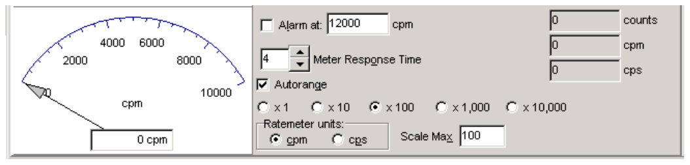
This panel displays an analog-style meter movement of the current Acquisition. The settings for this panel can be altered independently of the Chart display.
If Alarm at: is checked, the analog display will turn red and an audible alarm will sound, if the count rate exceeds the value contained in the input box. The alarm will reset when the count rate falls below the alarm level, or when the box is unchecked.
Meter Response Time changes the number of seconds of data over which the analog display is averaged. Higher values will result in a "smoother" meter action, but slower response to changes in the count rate. This can be varied between 1 and 60 seconds.
If Autorange is checked, the meter scale will change automatically based on the count rate. Scale Max changes the base value for the upper limit of the analog display. The x 1 through x 10,000 radio buttons are scale ranges for the analog display. Ratemeter units allows the capability to change the analog display between units of counts per minute (cpm), or counts per second (cps).
8Procedures
8.1 Calibrating a Detector with Model 970
In order to use the Model 970 with a given detector, the following must be done (in this order):
- Adjust Hardware Settings.
- Perform Energy Calibration.
- Perform a Shape Calibration. Following this step, the 970 is ready to provide Qualitative Analysis.
- Create a "Regions of Interest" (ROI) Set. This is in preparation for Efficiency Calibration, which must be coupled to an ROI Set.
- Perform Efficiency Calibration. Once an Efficiency Calibration has been performed, the 970 is ready to perform Quantitative Analysis.
8.2 Adjust Hardware Settings
Hardware Settings are used to adjust Input and Polarity, High Voltage (HV), Threshold, Coarse Gain, Fine Gain, and Shaping Time.
Hardware Settings are unique to each 970/detector combination. The specific settings are loaded when a specific detector is selected. If you intend to use the same detector at different Hardware Settings, you can define separate detectors with different descriptions.
Since the Model 970 was designed to work with essentially any radiation detector (or more specifically, in the case of SNAP-MCA Full, essentially any gamma detector), the software cannot make any assumptions regarding the operating characteristics of the detector and therefore cannot contain automated hardware adjustment. Discovering the appropriate Hardware Settings for a particular detector is essentially a trial-and-error process. Fortunately, this process is neither difficult nor time consuming.
The process for determining appropriate Hardware Settings consists of placing a known radiation source of modest activity in front of the detector, adjusting one or more of the Hardware Settings, and beginning an Acquisition. Repeat this process until a satisfactory spectrum is achieved.
8.2.1 Radiation Source and Detector
For most gamma scintillation detectors that will be used with Model 970, an approximately 1 µCi 137Cs source is probably the best to use in performing the hardware setup. It provides two distinct peaks; a low-energy multiplet centered around 32.89 keV and a higher energy gamma at 661.65 keV. Another isotope can be used provided that the expected spectrum is known, but the procedures in this manual assume that 137Cs will be used. Whatever source is used, be cautious of using one with too great an activity. Many scintillation detectors, especially those originally designed for hand-held battery powered instruments have a high resistance dynode string (e.g., 120 MΩ) to minimize the current draw from the HV power supply. Unfortunately, this also has the effect of causing peaks to shift as a function of the incoming count rate. If you are purchasing a new detector for use with your 970, it is recommended that a dynode string of about 6 MΩ be specified. The general thumb rule for spectroscopy is that lower is better, but do not use a detector with a dynode string less than 4 MΩ. If you are using a detector with a high resistance dynode string, the best way around this is to perform Energy and Efficiency Calibrations at approximately the same count rate as the samples you will be analyzing.
8.2.2 Input and Polarity
The 970 has two detector inputs. INPUT 1 is the series "C" connector right next to the DB9 serial connector. This input has the signal and the High Voltage coupled just as on most hand-held instruments. If your detector has only one connector, INPUT 1 is the one you should use. If your detector has two connectors, one for High Voltage and one for the signal, you should use INPUT 2. The SHV connector carries the High Voltage for INPUT 2 and the BNC connector accepts INPUT 2's signal. Only one of the inputs should be connected to a detector at any one time.
Most single-connector detectors produce negative pulses, so negative polarity should be chosen. Many two-connector detectors (especially those with internal preamplifiers) produce positive pulses, but this cannot be taken for granted. You can either consult the detector manufacturer as to the pulse polarity or just try both polarities and see which one works.
If your detector requires voltage for an internal preamplifier, the 970 can provide positive and negative 12 volt DC through the mini DIN-7 connector and the (included) adapter. The pin out of this adapter follows the NIM standard and should couple directly to the detector.
The 970 can also accept pre-shaped positive pulses through either input. Note: pulses exceeding about 5 V in magnitude (whether positive or negative) will be clipped. If you use this feature, an attenuator may be required.
8.2.3 High Voltage
If you have past experience with the detector, the voltage at which it was operated is a good starting point for the 970. This is also often referred to as "Bias Voltage." Alternatively, you can check with the detector's manufacturer for an approximate Bias Voltage or at least a "Not-to-exceed" voltage. Failing that, you can just increase the High Voltage to the detector until you get a decent looking spectrum.
The detector Bias Voltage used for spectroscopy is generally a bit lower than the "plateau" voltage used in many gross-count instruments.
With scintillation detectors the Bias Voltage also provides Gain, so essentially the same spectrum can be obtained using a lower Bias Voltage and higher Gain or a higher Bias Voltage and a lower Gain. If the Bias Voltage is higher than optimal, the spectrum will appear distorted.
8.2.4 Threshold
The Threshold, sometimes called input sensitivity or discrimination, is the minimum pulse height in millivolts (mV) that will be recorded by 970 as a count. Since the 970 can accept pulses of either polarity, the Threshold is entered as an absolute value. This can range from 0 to 2047 mV.
Photomultiplier tubes, cables, AC power, and the power supply and other circuitry within the 970 all generate electronic noise that can be erroneously interpreted as counts. This noise tends towards the low energy region of the spectrum and can be removed by setting the Threshold sufficiently high to block it. If a large peak occurs toward the left of the spectrum, (i.e., one that overpowers "real" peaks in the spectrum), the Threshold should be adjusted to a higher value. If you desire to observe the lower energy portion of the spectrum, the Threshold can be brought closer to zero until the noise becomes apparent. Changes to the HV or Gain may cause the location of the noise line to shift, requiring a readjustment of the Threshold. The two highest Gain ranges will usually require a Threshold to be set in the 100 to 200 mV range unless the detector is unusually "quiet."
8.2.5 Coarse Gain and Fine Gain
The Coarse Gain and Fine Gain controls are used to increase the signal from a detector to the point where it can be displayed usefully as a spectrum. These two controls are used together to create an overall Gain. The overall Gain is generally the value you should follow.
It is worth mentioning that the Gain settings are arbitrary and not absolute. In other words, if you put in a pulse of exactly 1000 mV with an overall Gain of x1, the pulse will not necessarily appear in channel 1000. Similarly, a positive pulse of exactly 1000 mV will not necessarily appear in the same channel of a negative but otherwise identical pulse. This is normal and is only mentioned here so no surprise is experienced if you put a pulse generator on the 970. Relative Gain values are reasonably accurate.
You should avoid using the extreme low end of the Fine Gain control to the extent possible. For example, you can obtain an overall Gain of x3.391 with a Coarse Gain of x2 and a Fine Gain of x0.848. You can obtain nearly the same overall Gain value using a Coarse Gain of x125 and a Fine Gain of x0.027. The latter settings will produce a distorted spectrum, however. As a general rule, the lowest Coarse Gain setting possible should be used.
8.2.6 Shaping Time
Shaping Time is usually specific to classes of detectors. Virtually all common scintillation and CdZnTe semiconductor detectors use a Shaping Time of 1 µsec. If you are not sure, try various Shaping Time settings until you get the best looking spectrum. Also, changing the Shaping Time will usually necessitate changing the Gain settings as well.
8.2.7 Determining Initial Hardware Settings
Prerequisites. This procedure assumes that the detector is attached to the Model 970, the 970 is switched on, SNAP-MCA software has been successfully started, and a 137Cs of approximately 1 µCi is on the detector. It is also assumed that the detector to be used is capable of seeing both the 32 and 662 keV peaks.
Discussion. Hardware Settings cannot be adjusted until the Allow Edit box is checked. Generally speaking, most adjustments to expand the separation between peaks should be performed using the HV (High Voltage) adjust. Start increasing the Gain only if the peak separation remains too small even at the maximum HV recommended for the particular detector. Increase the Gain until the peak separation is slightly wider than desired, and then reduce the HV as needed. If the peaks are in a good location but appear distorted, try lowering the HV and increasing the Gain. Adjust the Threshold lower if too much of the low energy portion of the spectrum is being cut off. Adjust the Threshold higher if noise is apparent in the lowest regions of the spectrum.
In using the Hardware Setting adjustments, the associated Set button will become enabled, indicating that the value has been changed from those at which the 970 is currently set. For example, if you change the HV the Set HV becomes enabled. Clicking the associated Set button will (1) pause the current Acquisition if one is occurring, (2) set all Hardware Settings that have been changed, not just the one the particular button is associated with, and (3) restart the Acquisition (if one had been occurring) with the new settings without clearing the previous spectrum.
Although it is completely up to the user (and subject to the characteristics of the detector being used), it has been generally found that adjusting the Hardware Settings such that the 662 keV peak is at about channel 1200 will give an overall energy range coverage to about 2,300 keV. Hardware Settings are automatically saved and applied to a specific 970/detector combination any time a Set button is pressed. If different sets of Hardware Settings are desired for the same detector, create a "new" detector based on that detector, changing the description to reflect the different purpose.
Procedure.
- Click on the Hardware button on the 970 Button Panel. This will open the Hardware Settings Panel along the bottom of the Spectrum Display.
- Check the Allow Edit check box to enable the Hardware Settings.
- Ensure that the HV is set to a reasonable value. For relatively new 970 users, Coarse Gain should be at x2 (the lowest setting) and the Fine Gain should be at x0.500 for an overall Gain of x1; the Threshold should be at 50 mV.
- Click the Start Acquisition button to begin counting the source. Allow the source to count long enough to see the relative locations of the two 137Cs peaks. NOTE: If excessive noise is clearly visible in the lowest portion of the spectrum, increase the Threshold, clear the spectrum, then restart the Acquisition. Repeat this process as needed.
- If no peaks are visible, increase the HV and go back to step 4.
- If both 137Cs peaks are not visible:
- If there are very few counts to the right of the visible peak but many to the left (i.e., only the 662 keV peak is visible) and it is towards the right of the Spectrum Display, increase the HV and go back to step 4.
- If there are many counts to the right of the visible peak (i.e., only the 32 keV peak is visible and the 662 keV peak is out of view to the right), decrease the HV and go back to step 4.
- If there are very few counts to the right of the visible peak but many to the left (i.e., only the 662 keV peak is visible) but the peak is in close to the desired location on the spectrum, adjust the Threshold closer to zero and go back to step 4.
- If both 137Cs peaks are visible, but are farther apart than wanted, decrease the HV and go back to step 4.
- If both 137Cs peaks are visible, but are closer together than wanted, increase the HV and go back to step 4.
- If the HV is at the highest HV recommended by the detector manufacturer (or if it is higher than you are comfortable with, or is obviously distorting the spectrum), leave the HV where it is, increase the overall Gain and go back to step 4.
- When the two peaks are in their optimal locations, uncheck the Allow Edit box.
- Click the Full Screen button on the Button Panel to close the Hardware Settings Panel and restore the spectrum to the largest possible viewable area.
Once all the Hardware Settings are finalized, an Energy Calibration can be performed.
8.3 Perform Energy Calibration
Prerequisites. This procedure assumes that the detector is attached to the Model 970, the 970 is switched on, SNAP-MCA software has been successfully started, a radioactive source of known isotopic composition is on the detector, and the 970 Hardware Settings have been set appropriately. Note: The Energy Calibration is unique to each 970/detector combination. The specific Energy Calibration settings are loaded when a specific detector is selected. If you intend to use the same detector with different Energy Calibration values (e.g., to account for differing source geometries), you can define separate detectors with different descriptions.
Discussion. SNAP-MCA uses a linear interpolation between Energy Calibration points. More sophisticated modeling was not implemented because the wide range of characteristics in the detectors supported by the 970 makes it impossible to accurately model for all possible energy response. It was also determined that there were certain advantages to using this method, especially in the low-energy range. In short, the more data points entered, the more accurate the Energy Calibration will be. If there is a limited energy region in which you are interested, adding additional data points in those areas will increase the accuracy in that area without skewing the Energy Calibration in other regions of the spectrum. Be careful, however, of energies that are extrapolated very far beyond calibrated points.
If an estimate of the energies for the lowest and/or highest energies on the spectrum (i.e., energies at channels 1 and/or 4094) can be made, it is a good idea to enter these as Energy Calibration points to reduce extrapolation error. Additional Energy Calibration points, up to a total of 14, can be added or altered at any time during the operation of SNAP-MCA, and will be reflected in all subsequent analyses. At least two calibration points must be entered to perform an Energy Calibration.
It is not necessary to stop a spectrum Acquisition to perform or alter an Energy Calibration, although Acquisition may automatically pause briefly and restart. Calibration points may be entered in any order; they will be arranged by order of energy when the Enrgy Cal! button is pressed.
If this step is begun immediately following the Hardware Settings procedure above, and the final 137Cs spectrum is displayed, that spectrum can be used instead of acquiring a new one (skipping step 1 below). The spectrum can be zoomed in or out at any point as desired by using the mouse to drag a box on the Spectrum Display.
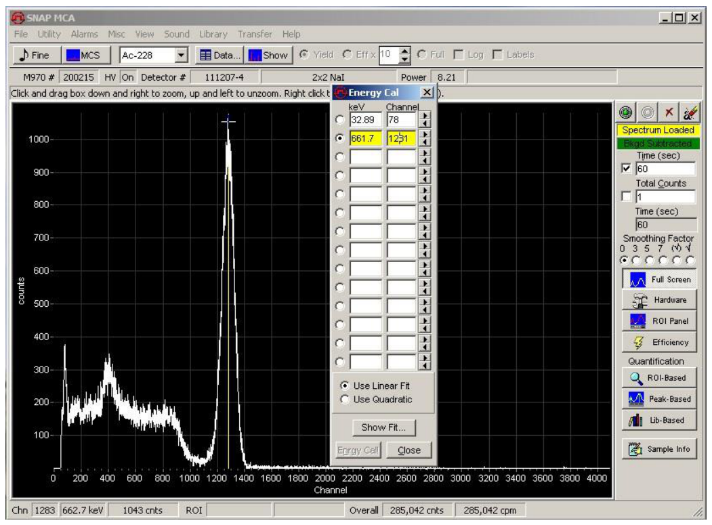
Procedure.
- Acquire a spectrum with known peaks. It is usually a good idea to start with a relatively simple spectrum, such as 137Cs.
- From the Utility menu, select Energy Calibrate… The Energy Calibration window will appear. If this is the first Energy Calibration for this detector, the energies for the two 137Cs peaks will be present. The Energy Calibration window can be moved around the screen by clicking on the blue bar along the top and dragging it to the desired location.
- Assuming a 137Cs spectrum is displayed, assign channels to the energies by:
- Clicking the radio button next to "32.89" keV. The keV box and the channel box to its immediate right will turn yellow.
- Move the mouse cursor over the 32.89 keV peak on the Spectrum Display and double click. A yellow line will appear on the spectrum indicating the location of this Energy Calibration point, and the channel number will appear in the channel box.
- If the Energy Calibration point is not in the optimal location, adjust its location by double clicking in a different location, clicking on the relevant Channel box and entering the desired channel number using the keyboard, or using the spin buttons to the immediate right of the relevant "Channel" box to move the data point up or down one channel at a time.
- Click the radio button next to "661.7" keV. The keV box and the Channel box to its immediate right will turn yellow.
- Move the mouse cursor over the 661.7 keV peak on the Spectrum Display and double click. A yellow line will appear on the spectrum indicating the location of this Energy Calibration point. Adjust the location of the yellow line as in step 3.c.
- Click the Enrgy Cal! button. This will perform an Energy Calibration based on the initial two data points. The Energy Calibration window will remain open. At this point, when the cursor is moved over the Spectrum Display, the energy associated for the cursor location will be displayed in the Spectrum Status Bar in addition to the status bar.
- Acquire additional spectra and add additional Energy Calibration data points as desired. When finished, click the Close button to hide the Energy Calibration window.
8.4 Perform a Shape Calibration
Prerequisites. This procedure assumes that the detector is attached to the Model 970, the 970 is switched on, SNAP-MCA software has been successfully started, a radioactive source of known isotopic composition is on the detector, the 970 Hardware Settings have been set appropriately, and an Energy Calibration has been performed.
Discussion. For NaI (Tl) detectors, the Full Width at Half Maximum (FWHM) is proportional to the square root of the centroid energy as is the overall peak area. The Shape Calibration helps determine the exact multipliers for the FWHM for the specific detector.
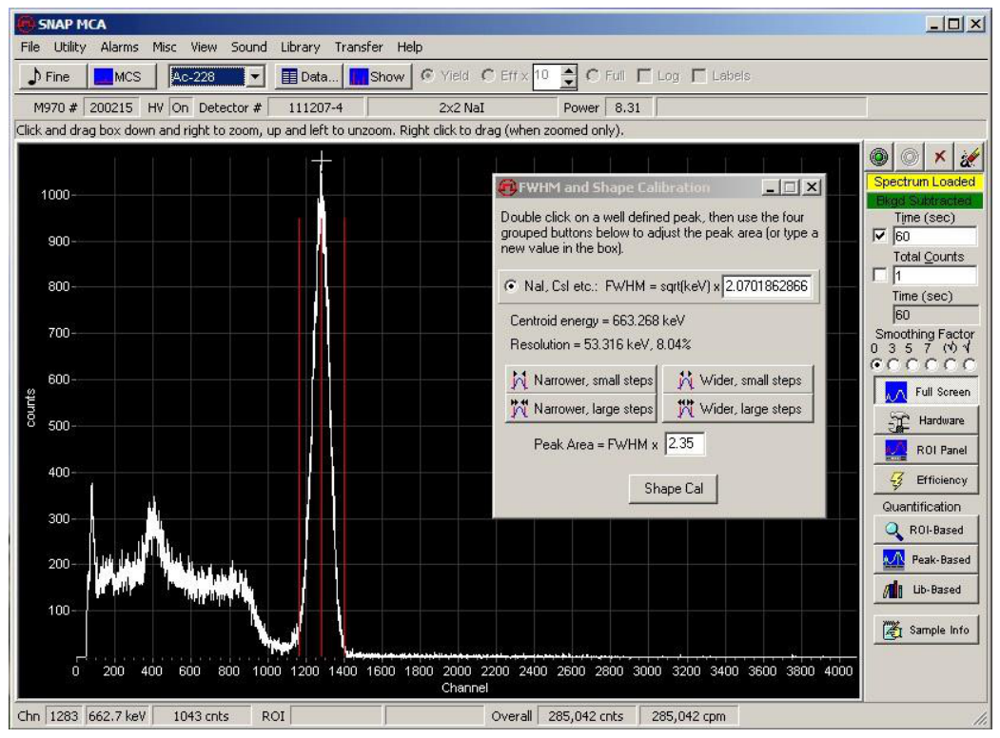
Procedure.
- Acquire a spectrum with known peaks. It is usually a good idea to start with a relatively simple spectrum, such as 137Cs.
- From the Utility menu, select Shape Calibrate… The Shape Calibration window will appear. The Shape Calibration window can be moved around the screen by clicking on the blue bar along the top and dragging it to the desired location.
- On the Spectrum Display, double click near the center of a well-defined peak. This will put a red line in the centroid of the peak as well as calculate and display the FWHM multiplier. Two additional red lines will also be displayed estimating the bounds of the peak area.
- Use the group of four buttons to adjust the outer red lines to accurately reflect the boundaries of the peak.
- Click the Shape Cal button.
The Shape Calibrations are now complete.
8.5 Create a Regions of Interest (ROI) Set
Prerequisites. This procedure assumes that the detector is attached to the Model 970, the 970 is switched on, SNAP-MCA software has been successfully started, a radioactive source of known isotopic composition is on the detector, the 970 Hardware Settings have been set appropriately, and an Energy Calibration has been performed.
Discussion. An ROI Set must be created in order to perform a detector Efficiency Calibration. You will also be able to use ROI Set later for performing a Quantitative Analysis of a spectrum.
There are two ways to create an ROI Set. In the first method, a spectrum is acquired and the Find Peaks button is pressed from the Peak-Based Panel, edited as desired, then saved as an ROI Set. The ROI Set can be further edited from the ROI Panel, including adding or removing specific ROIs to or from the set. In the second method, ROIs are created from scratch by manually selecting portions of the spectrum.
ROI Sets are based on energy, not channel. This allows an ROI Set to be used with more than one detector. The channel locations for the starting and ending points are re-calculated from the stored energy values each time the ROI Set is loaded and when an Energy Calibration is performed. ROIs will be sorted by energy, from lowest to highest, when an Efficiency Calibration is performed.
Procedure: Creating an ROI Set Using Find Peaks ("Automatic Method").
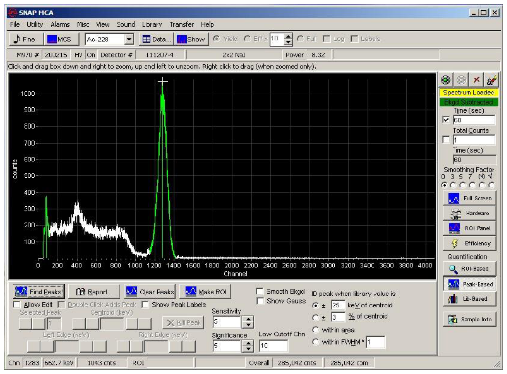
- Acquire a spectrum with known peaks. It is usually a good idea to start with a relatively simple spectrum such as 137Cs.
- Click on Peak-Based on the SNAP-MCA Button Panel. This will open the Peak Settings Panel along the bottom of the Spectrum Display.
- From the Peak-Based Panel, click on Find Peaks. The peaks and their ROIs will be highlighted automatically in green.
- The found peaks can now be edited, if desired, by clicking on the Allow Edit box. The user can now adjust the centroid and the left and right edges of each peak region. Peaks can also be added as well as deleted.
- To add a peak, simply click on the Double Click Adds Peak box. Locate a peak on the spectrum with the mouse and double click. Another peak region will appear.
- To adjust the centroid, left or right edges of any peak region:
- Select a peak using the Selected Peak arrow set. (Default designates the left-most peak as #1.) The selected peak will appear in purple highlight, while the remaining peaks will be highlighted in green.
- Using the Centroid (keV), Left Edge (keV), and Right Edge (keV) arrow sets, adjust accordingly. (Double arrows adjust the settings in approximately 5 keV increments, while the single arrows adjust the settings in approximately 0.5 keV increments.)
- To delete a peak, first select the peak to be deleted using the Selected Peak arrow set. Once the peak is highlighted, click on the Kill Peak button.
- When finished editing found peaks, click on Make ROI on the Peak Panel to convert the found peaks into an ROI Set. A message will display indicating that the ROI Set should be given a name. Naming the ROI Set can be put off until later, but it is highly recommended that a name be given now.
- Type a name in the Save ROI Set dialog, and click the Save button.
- Once the set has been saved, the panel along the bottom of the Spectrum Display will switch over to the ROI Panel to allow additional editing, if desired.
- Editing the ROI Set from the ROI Panel is described in the next section.
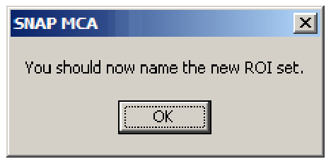
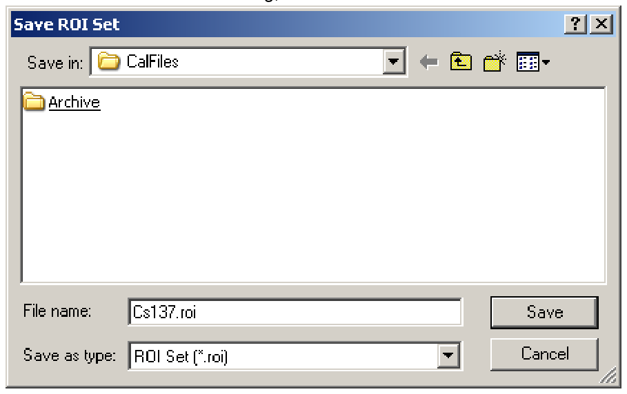
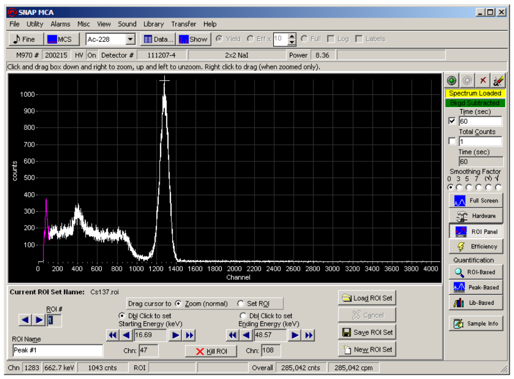
Procedure: Manually Creating or Editing an ROI Set ("Manual Method").
- Acquire a spectrum with known peaks. It is usually a good idea to start with a relatively simple spectrum such as 137Cs.
- Click on ROI Panel on the SNAP-MCA Button Panel. This will open the ROI Edit Settings Panel along the bottom of the Spectrum Display.
- To create a new ROI Set, click on the New ROI Set button to assign a file name to the new set. (If this is not done before the following steps, a "Not Saved!" warning will be displayed as a reminder. This warning will also be shown any time the ROI as displayed is different from the saved ROI file.)
- To create an ROI by dragging on the Spectrum Display:
- Use the left and right arrow buttons to either select an existing ROI to edit (it will be displayed on the spectrum in fuchsia) or select a "blank" ROI (input fields will be blank and no fuchsia will be present on the Spectrum Display).
- Click on the Set ROI radio button.
- Use the cursor to locate the edge of the desired region. Click and drag the fuchsia box to encompass the desired region.
- To create an ROI by double clicking each edge:
- Use the left and right arrow buttons to either select an existing ROI to edit (it will be displayed on the spectrum in fuchsia), or select a "blank" ROI (input fields will be blank and no fuchsia will be present on the Spectrum Display).
- To set the left edge, check the Double Click to set Starting Energy (keV) radio button. To set the right edge, check the Double Click to set Ending Energy (keV) radio button.
- Position the cursor at the suitable location on the Spectrum Display and double click.
- The energy and associated channel will be displayed in the appropriate boxes on the ROI Panel.
- When both edges have been entered, the ROI will be displayed on the spectrum in fuchsia.
- ROIs can be edited by using the relevant arrow and double arrow keys. Arrows move the edge of the ROI by a single channel; double arrows move the ROI by ten channels.
- Type a name for the ROI in the ROI Name box. While it is not strictly required that each ROI be given a name, it is strongly recommended. Individual ROI names can be up to 24 characters long.
- Repeat as needed for additional ROIs.
- You can acquire a new spectrum to add additional ROIs.
- After editing, don't forget to save the ROI Set.
You are now ready to perform an Efficiency Calibration.
8.6 Performing an Efficiency Calibration
Prerequisites. An Energy Calibration must be completed and an ROI Set loaded before an Efficiency Calibration can be performed. ROIs will be sorted by energy, from lowest to highest, when an Efficiency Calibration is performed.
Discussion. Efficiency Calibrations are attached to specific ROI Sets. Known activities of known isotopes are assigned to specific energies in the spectrum. SNAP-MCA uses a linear interpolation between Efficiency Calibration points to allow Quantification of isotopes for which no specific calibration source is available. The same Efficiency Calibration is used when performing ROI, peak, or library-based Quantification.
Note that the ROI Set can contain isotopes that are not included in the Efficiency Calibration source. These must be designated as "unknowns," however, so that SNAP-MCA knows to calculate efficiencies for these ROIs from interpolated data. The perfect Efficiency Calibration source matches exactly the type of samples you will be quantifying in isotopic composition, activity, and physical makeup. A good Efficiency Calibration source contains isotopes with energies similar to or at least bracketing those you are interested in. Isotopes and specific peaks must be assigned to all ROIs including "unknowns." The selections for these are limited to those enabled in the library currently being used.
Procedure.
- Acquire a spectrum of your Efficiency Calibration source. A Background Spectrum should also be subtracted from the display if that is how your samples will be analyzed.
- Click on Efficiency on the SNAP-MCA Button Panel. This will open the Efficiency Calibration Panel along the bottom of the Spectrum Display.
- To calibrate, click on the Allow Edit box.
- Select a specific ROI using the ROI # arrows.
- If the ROI is one contained in the calibration source:
- Select the nuclide for the ROI from the Associated Nuclide drop-down list.
- Select the peak energy for the ROI from the Associated Peak drop-down list.
- Enter the activity of the source being used in the Activity box.
- Select the appropriate units from the Units drop-down list. NOTE: The units must be the same for all isotope activities entered for the calibration!
- If the ROI is not contained in the calibration source:
- Check the Assign ROI as Unknown box.
- Select the nuclide for the ROI from the Associated Nuclide drop-down list.
- Select the peak energy for the ROI from the Associated Peak drop-down list.
- Click on the ROI Eff. Cal! button.
- Click on the Report button to view, save, or print the Efficiency Calibration report. This report is available any time following the Efficiency Calibration, until replaced by a new Efficiency Calibration.
8.7 Fine Tuning Hardware Settings
Prerequisites. This procedure assumes that an Energy Calibration has been performed.
Discussion. The Fine Tuning procedure provides an automated way of adjusting the Fine Gain to compensate for small shifts in the spectrum due to changes in the temperature, etc., of the detector. This procedure can also be done manually. In many cases, it is quicker to manually adjust the Fine Gain setting.
Procedure. Click on the Fine button on the Button Bar. A small window will pop up and display an isotope selection drop-down menu and an energy peak selection drop-down menu. The Hardware Settings Panel will also open along the bottom of the Spectrum Display, but only the Fine Gain Adjust (64) will be active.
- Select an isotope and an energy peak from the drop-down menus.
- Click on the Fine Tune button. Note: The corresponding isotope source must be on the detector in order for Fine Tuning to be successful.
- A series of Acquisitions will follow until the most accurate Fine Gain adjustment is achieved. This can take several minutes.
- A "Fine Gain Adjustment Complete" message will appear when the procedure is done.
9Support Programs
Several levels of technical support are available for users of the Model 970.
9.1 Factory Technical Support
Berkeley Nucleonics offers fast and efficient support from our headquarters in California, as well as several satellite offices domestically and abroad. Visit our website at http://www.berkeleynucleonics.com/ for the support and service center nearest you, or call 800-234-7858. Technical support programs range from First Responder end user support to advanced Health Physics technical assistance.
9.2 Protocol Development
Radiation Detection is a growing field, and many organizations are developing new protocols to address applications for interdiction of illegal transportation to confirmation of medical treatments. Conventional applications such as environmental remediation are also faced with new challenges. To assist in the development of protocols around your application, Berkeley Nucleonics can offer seasoned Health Physicists to work closely with your team. Contact our factory to discuss the details of your application. Domestic or International, Classified or Non-Classified, we have an on-site support team available to assist.
9.3 Vendor Enhanced Reachback Program
For applications when expedited support and spectroscopic analysis is required, Berkeley Nucleonics has established an around-the-clock support program available to customers of the Model 970 Portable Multi-Channel Analyzer. Access to spectroscopists can give your decision making management team, and your mitigation activities added credibility. Whether you are considering the event itself, or the documentation requirements that follow, enlist our team of spectroscopists with an Enhanced Reachback Program.
9.4 State or Federal Agency Support
Several State and Federal agencies are available to support your application. Our knowledgeable team will assist you in setting up your instruments to automatically condition the data in formats required by these agencies. Data can be exported automatically, or via electronic mail, to allow remote experts to analyze the information. A current list of email addresses, phone numbers, and contact names can be obtained from the factory, at 800-234-7858.
10Specifications
Preamplifier
| Parameter | Specification |
|---|---|
| Type | Charge Sensitive |
| Input | Negative Current (anode) |
| Output | Positive HV supply variable 0 V to 2000 V (0.5 mA); Negative HV supply also available |
ADC
| Parameter | Specification |
|---|---|
| Type | 4096 channel, 14-bit pipelined |
| Speed | 50 MHz |
Pulse Processing
| Parameter | Specification |
|---|---|
| Type | Digital, Trapezoidal Shaping |
| Shaping | 250 ns to 10 µs |
| Gain | Digital, x1, x2, x4, x15, x35, x125, and x250 |
| LLD | 0 to 100 % of full scale digitally adjustable in .006 % intervals |
| ULD | 0 to 100 % of full scale digitally adjustable in .006 % intervals |
| Zero | -5 % to +5 % of full scale, digitally adjustable |
Spectrum Conversion
| Parameter | Specification |
|---|---|
| Collection Mode | Linear – 16384 Channels |
| Conversion Modes | Linear – 4096 Channels |
System Controller
| Parameter | Specification |
|---|---|
| Processor | PPC405 CPU at 50 MHz |
| Controls | SNAP-MCA and SNAP-MCA Full software |
| I/O | RS-232 (16550 UART or higher); USB port is also acceptable if USB-to-RS232 adapter is used |
Input Power
| Parameter | Specification |
|---|---|
| Batteries | Internal, 6 x 1800 mAh NiMH AA batteries |
| AC | 110 VAC or 220 VAC to 12 V DC adapter (1.25 A) |
| Motor Vehicle | 12 V, 1.25 A if Fast Charge, 750 mA if Slow Charge |
Output Power
| Parameter | Specification |
|---|---|
| Logic and Alarms | +5 V, +12 V and -12 V via Mini DIN-7 connector |
Gamma Detector
| Parameter | Specification |
|---|---|
| Crystal | 2" x 2" or 3" x 3" NaI; or 1" x 1" or 1.5" x 1.5" CeBr |
| Bias | Integral HV supply from 0 – 2000 V; Actual operating voltage calibrated to each detector |
| Connection | Input 1 – Series "C" connector; Input 2 – SHV connector (supply) and BNC connector (signal) |
Neutron Detector (if present)
| Parameter | Specification |
|---|---|
| Type | 6LiI or 3He |
| Moderator | 1 cm polypropylene |
| Discriminator | Digital pulse shape and energy discrimination |
Physical
| Parameter | Specification |
|---|---|
| Temperature | 32°–122°F (0° to 50°C) |
| Weight | 391 grams (13.8 oz.) |
| Size | 157 x 90 x 44 mm (6.2 x 3.5 x 1.7 in.) |
11Contact Us
Berkeley Nucleonics Corporation
- Phone: (415) 453-9955
- Address: 2955 Kerner Blvd., San Rafael, CA 94901
- Email: info@berkeleynucleonics.com
- Web: www.berkeleynucleonics.com
Model 970 User Manual · Document Version Number: 1.0 · Software Release: 2.1.3 · Print Code: 31025070